Recipes, stories, and ephemera from a Chicago tiki bar in quarantine
March – May 2020
Welcome to the Lost Lake Community Thread!
2020-03-20
Hello, people!
Your financial support means the world to our staff. We hope that this newsletter will serve as a small token of gratitude for your donation — and as a cute way to help us stay connected, stay home (when possible), and stay pleasantly occupied until we can meet over daily daiquiris once again.
First things first, we’ve got two recipes in here that require a couple syrups — so, let’s make some syrup!
Coconut Cream
1 13.5 ounce can unsweetened coconut milk
2 cups demerara sugar (like Sugar in the Raw!)
Combine the coconut milk and sugar in a small saucepan set over medium-low heat. Whisk until the sugar dissolves and the mixture is smooth, about 5 minutes, then remove from the heat and let cool to room temperature. This recipe makes approximately 22 ounces. You can store in an airtight container in the fridge for about a week. This syrup will separate and that’s okay! Just give it a good shake before using.
Cinnamon Syrup
Whip up some simple syrup (equal parts white sugar and water, stirred over heat until all the crystals dissolve) and toss in a bunch of cinnamon sticks. Let it steep for at least 24 hours, strain out cinnamon.
Coffee Demerara Syrup
Take some of that demerara sugar left over from making coconut cream, and mix equal parts with brewed coffee over heat until all the crystals dissolve.
ALAN, THE DUSTY FLAMINGO
Dusty Flamingo + the Hillbilly Lobo is the ‘first’ cocktail I had at Lost Lake. I say ‘first’ because I had visited Lost Lake my first night in Chicago and apparently drank several Feejee Mermaids and don’t remember much. I even pulled a classic rookie move and walked straight past the line outside, barging my way in — only to be sent back outside to line up against the wall like a 5th grader waiting to go back to the classroom after recess. Anyway, we’ve all done it, don’t feel bad.
Today I’m finding myself in a similar situation as I did when I had my first Dusty Flamingo and the Hillbilly Lobo, but this time it’s out of my control — shout out to you, COVID-19. Let me take you back to my first shift at Lost Lake...
Here I am on a Thursday evening walking into my soon-to-be-place of work with my brand new flamingo-print shirt purchased off Amazon. Before finding the manager, I was approached by Hannah and she told me how much she liked my shirt — little did I know that she would do this every time I wore said shirt. (Hannah now owns this flamingo-print shirt; she appreciates it more than I ever could.) After being introduced to everyone, I quickly started training with Liz. This shift is supposed to be comparable to the first week of classes in school, kinda like “syllabus week,” where you are given a bunch of information to remember, but nothing is actually expected of you. Unfortunately, this was not the case for me.
After a couple of hours, Lost Lake was packed with people and Liz was sent down to prep extra garnishes in the basement because we were running out. Liz left me with the instructions to “hold it down.” I knew what she meant, but also this was my first night and I had forgotten everybody’s names as soon they were spoken to me. I really wanted to get this job, so I knew I needed to impress my coworkers. Everybody had kicked it into high gear and was crushing it, so I followed their lead.
Come 10pm, Liz finally re-emerged from the basement and I was invited to have a drink at the bar AKA a “shifty.” I take a seat at the bar, and as I browse through the menu and I’m so distracted by how long the drink names are that I don’t know what to order! Vince rounds the corner and recommends that I order the Dusty Flamingo and the Hillbilly Lobo.
The drink was perfect in both its flavor profile and as a shifty, because I was feeling like a dusty flamingo sitting at the bar at 1am in my flamingo-print shirt from Amazon. The drink is bold and rich to start, but the finish is light and dry — inviting you to take another sip or order another. (As would be my routine for the next month or so.)
Thanks for reminiscing with me and enjoy this photo of my trying my actual first cocktail at Lost Lake.
Dusty Flamingo and the Hillbilly Lobo
2 oz tequila
0.25 oz mezcal
0.5 oz fino sherry
1 oz coconut cream
0.75 oz lime
0.25 oz honey
Combine all ingredients in a cocktail shaker with one cup crushed ice. (You can just bust up a bunch of freezer ice with a rolling pin!) Give it a good shake for about 5 seconds, then pour the entire contents into your cutest glass (we call that a 'dirty dump' lol). Top with more crushed ice, and garnish with tropical things! We like nutmeg and toasted coconut on this one.
#OOTD
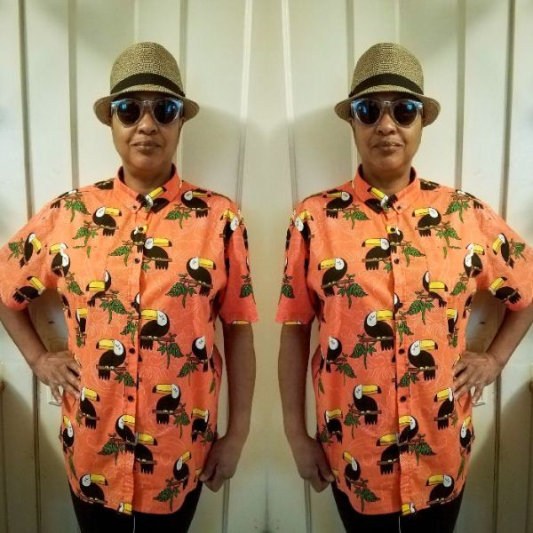
Tracey has the best tropical ensembles around, and that's an undisputed fact. Has she ever even repeated an outfit?! Since this is a "work from home" lewk, she's dressed up from the waist up (leggings and house shoes not pictured).
"This shirt is a guest and staff favorite. The bright colors, the look of absolute content on Mr. Toucan's face — one can't help but smile. You see this shirt and thoughts of being carefree in warm weather and in front of lush sunsets comes to mind. Go and put on your happy shirt!"
Good advice, Tracey!
CAN WE TALK FOR A MINUTE?
Now that we're all hangin' out at home for a little while, we have tons of time to talk to our leafy friends! Andy recommends this jam for happy house plants.
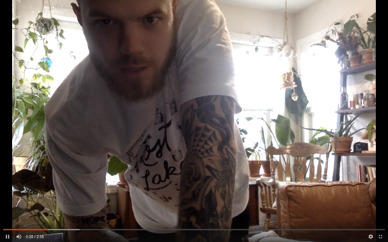
ERIC'S EXISTENTIAL CONGEE HAIKU
'Behind!' is the call
Moving fast through your own space
It’s just a reflex
Life comes at you fast, news seems to come even faster. Take the time to slow down and simmer. Put a pot on and whip up a hearty batch of congee, a warm and gratifying rice porridge. Originating in China, congee is now widely enjoyed in 15 countries throughout Asia, each with their own variations. The dish is a blank canvas, subtle flavors just begging to be dressed up with the seasonings you desire. Satisfying all home flavor artists, anyone from the Rothkos to the Pollocks can find a mix they enjoy.
Eric's End of the World Garlic Ginger Congee
1 Tbsp vegetable oil
1 cup rice
6-8 cups water or half/half split with any stock you may have on hand
5-6 cloves garlic (or more to taste)
2 inch chunk ginger peeled (more or less to taste)
Pinch of salt
*Mince garlic and ginger. You can use a microplane for this (thank you Chef Fred Noinaj for the pro-tip). Heat oil in a pot over medium high heat. A ceramic coated Dutch oven works great, but your favorite soup pot will do the trick. Add garlic and ginger to the oil and cook until fragrant. Add rice and stir in until the rice is coated and mixed. Add water/stock, bring to boil and reduce to simmer, stirring occasionally to avoid scorching. It will get sticky. Let cook for 45-60 minutes, or longer until it reaches the desired thiccness.
Serving suggestions: Sambal or sriracha or your favorite hot sauce. Soy sauce. Chopped scallions for a bright crunch. Stewed or crispy fried meats or tofu. Sauteed or roasted vegetables (spinach and broccoli work nicely). Pickled vegetables (onions or jalapeños if you’re feeling spicy). Eggs. Soft-boiled are my favorite, but fried or hard boiled eggs will get the job done.*
WORD UP (AND DOWN) (AND ACROSS)
This crossword was created by crossword enthusiast and Lost Lake Boyfriend's Club member Mike Morell! Download the puzzle PDF to print at home here. Answer key will be in next week's newsletter!
SOMETHING FROM NOTHING
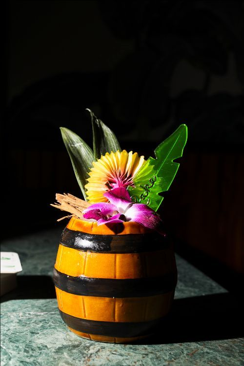
Making something from nothing is taking on a whole new meaning these days. Here's a bourbon-based fave from last year's cocktail menu!
SOMETHING FROM NOTHING
1 oz bourbon
1 oz aged Barbados rum
0.5 oz coconut cream
0.5 oz coffee demerara syrup
1 oz cold brew (or, um, these days cold coffee will surely do)
0.5 oz cinnamon syrup
0.5 oz lemon juice
*Combine all ingredients in a cocktail shaker with one cup crushed ice. (You can just bust up a bunch of freezer ice with a rolling pin!) Give it a good shake for about 5 seconds, then pour the entire contents into your cutest glass (we call that a 'dirty dump' lol). Top with more crushed ice, and garnish with tropical things! We like cinnamon and a swizzle stick on this one.
To make cinnamon syrup: whip up some simple syrup (equal parts sugar and water, stirred over heat until all the crystals dissolve) and toss in some cinnamon sticks. Let it steep for 24 hours, strain out cinnamon.
To make coffee demerara syrup: take some of that demerara sugar left over from making coconut cream, and mix equal parts with coffee over heat until all the crystals dissolve.*
REQUEST LINE IS OPEN!
Reply to this email or send us a DM on Instagram with your newsletter content requests!
Today we're going to get a highball lesson from Hannah, visit Trelawny Parish with Desira, chill out with some coloring courtesy of Laura, make Demi's avocado daiquiri, and Louise is going to make sure you #earnyourbooze!
Thank you so much for all your support, and please keep tagging @lostlaketiki as you finish your crosswords and make cocktails in your kitchens! And as always, the request line IS OPEN. Reply to this email or DM us on Instagram with your content requests!
AVOCADO DAIQUIRI
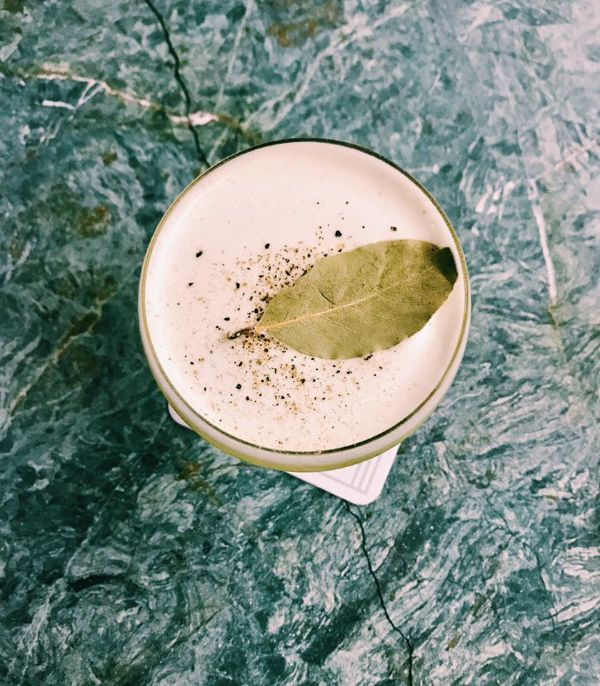
The Avocado Daiquiri is by far one of Lost Lake's most requested recipes. It's the work of former/forever Lost Laker Demi Natoli, created for her Stranger in Paradise pop-up Violeta's — an homage to her south-Floridian upbringing that featured an entire menu of savory Cuban cocktails:
"With every meal we serve an avocado salad — not much in the way of greens, just avocado covered in olive oil, salt and pepper. As I worked on the Avocado Daiquiri, I mirrored the flavors in that dish alongside a syrup made from bay leaves, another staple in the Cuban kitchen.”
We asked for her permission to print it here, and she kindly obliged! If you want to give Demi a no-contact high five, you can find her on Venmo: @Demi-Natoli.
What's probably going to blow your mind about this cocktail is that the recipe doesn't call for avocado! The fatty 'cado flavors come from a barspoon of avocado oil. It's a technique we learned from the bartenders at Parisian cocktail bar Glass. They use coconut oil in their Glassquiri, the shaken colada banger you may remember from 2017— we featured it on the same menu as the Avocado Daiquiri.
Avocado Daiquiri
1 oz Plantation 3 Stars
1 oz La Favorite Rhum Agricole (any un-aged Martinique Rhum)
.5 oz fino sherry
1 oz pineapple juice (Trader Joe's has the best non-fresh option!)
.75 oz lime
.75 bay leaf simple syrup
.33 dropper Saline Solution
barspoon of avocado oil
Combine all ingredients in a cocktail shaker. Before you add ice, give it a little whisk or agitate it with a fork. Then add ice and shake that shit really, really, really hard — 'til it's too cold to hold! You need to put some work in to get that nice frothy head. Strain into a coupe glass, garnish with a bay leaf and cracked pepper.
Bay Leaf Simple Syrup Mix equal parts white sugar and water over heat until all crystals dissolve. Add a bunch of bay leaves and let steep over low heat for one hour. Pluck out the leaves and let cool.
Saline Solution A two-to-one mixture of salt and water. Stir until crystals dissolve, let cool.
"I’m offering A Parrot In Your Room Supporting You Every Time You Cry for the newsletter to share my coping strategy during this time of weirdness and uncertainty. I have found comfort in art during this anxious and seemingly endless time. It has given me an outlet to create beauty, a new routine, and ultimately a sense of control in a process that does have end."
HOW TO HIGHBALL WITH HANNAH
One of the questions I always get asked behind the bar is: “What’s your favorite thing to make at home?” To which I pretty much always respond, with characteristic sass, “a beer” or “a glass of wine.”
But what if you want some different flavors? What if you want a slightly bigger buzz than you might get from that 5% brewskie? What if you actually want to drink some of that strange bottle of booze you bought at the liquor store for that one cocktail you were gonna make for your friends for that party a year and a half ago?
Enter the highball! It’s just as easy as cracking open a bottle or a can, with a touch more creativity.
For those that don’t know, a highball is quite simply booze plus some sort of mixer. These truly run the gamut in terms of flavor. A highball can be as simple as a vodka soda - what I often refer to as a “voddy-soddy” and what Julia Gordon has been known to call “a one-way-ticket to flavor town.” They can alternatively be exceptionally high-class, nuanced cocktails like the Japanese highball: a carefully thought-out combination of Japanese whisky and carbonated water meant to showcase the delicate flavors of the whisky itself.
How do you know what goes together? It really comes down to personal preference. Some folks swear by their whiskey gingers, some never stray from their G&Ts. That said, there are a few key things I think about when messing around with spirits and mixers. Here are a few to consider:
CITRUS IS YOUR FRIEND
Don’t be afraid to squeeze a little citrus into the mix. Whether you prefer a lemon or a lime (or an orange or a grapefruit or a kumquat), a little bit of acid can serve to either highlight notes already present in the spirit or merely balance out some of the sweetness of the mixer. You can also peel your favorite citrus fruit and express the essential oils over the top if you want the sensation of brightness without the pucker!
BIG, BOLD FLAVORS GO WITH BIG, BOLD FLAVORS
Love a spicy rye? Maybe pair it with a spicy ginger beer. Love a funky, overproof Jamaican rum? Match that heat with a cool little cola (and maybe some angostura bitters while you’re at it). If you prefer something a bit more delicate, choose a mixer with lighter flavors so you can still enjoy the base spirit.
THINK SUMMERTIME
I’ve always thought of highballs as summertime go-to’s. They’re things you sip on at the pool, on your porch, at the beach - or in the middle of March in your living room in Chicago when the governor tells you to stay home. So make ‘em something that makes you well and truly happy! And speaking of happy...
JUST HAVE FUN
Seriously, people, it’s just booze. Have a little fun with it!
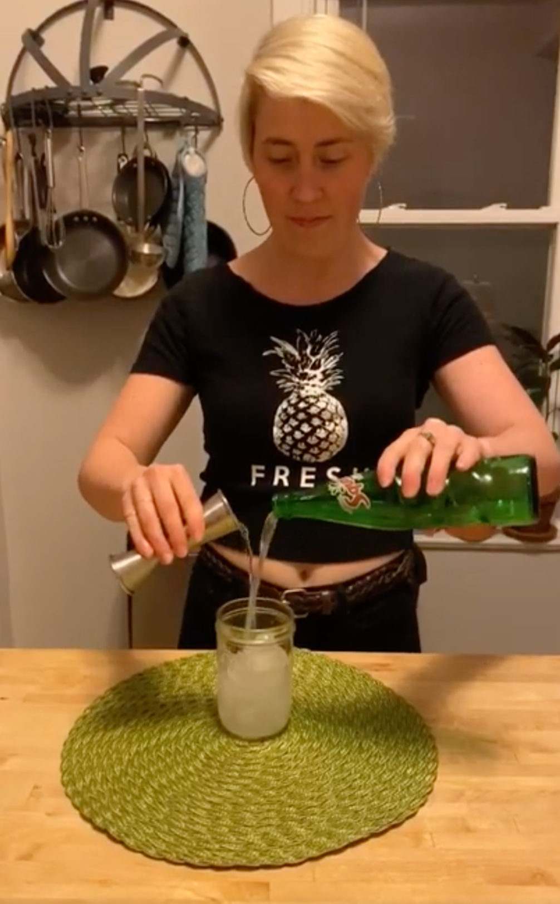
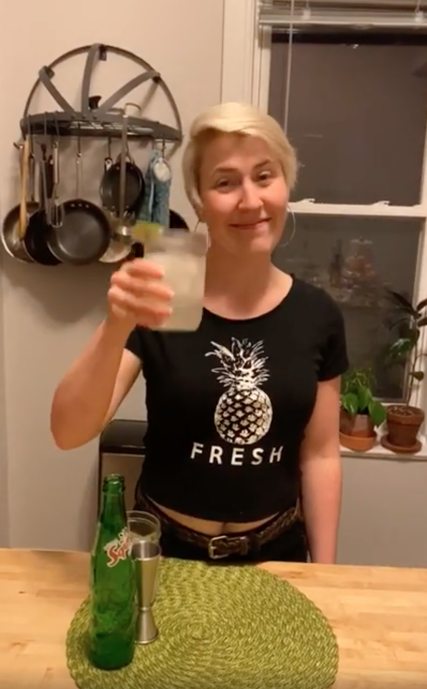
Some highballin' ideas from Hannah:
A Walk to the Lake
2oz tequila or mezcal
Mexican Squirt
half of a lime, quartered
two pinches salt
Combine booze and squirt in a glass with ice. Add lime and salt to taste. (If you’re feeling fancy, you can put the salt on the rim of the glass instead.)
Picnic Ti Punch
2oz Clement Premiere Canne
sparkling limeade
lime wedge
Pour rhum over ice. Top with sparkling limeade. Garnish with lime wedge.
Not Quite JB
2oz Rum Bar White Overproof
Mexican coke
2 dashes Angostura Bitters
Pour rum over ice, top with coke, add bitters, stir to combine.
Ode to Mama
2oz Cynar
Topo Chico
lemon wedge
Pour over ice, garnish with lemon wedge.
DESIRA GOES TO TRELAWNY PARISH
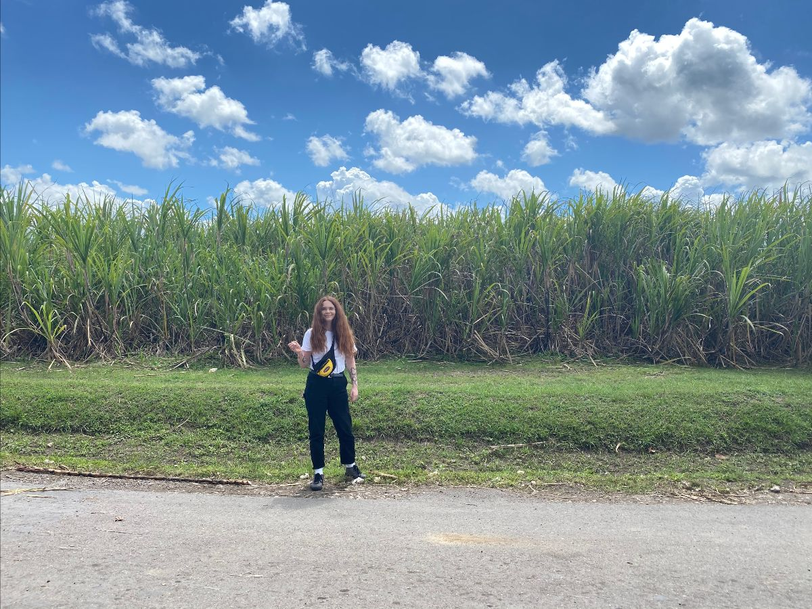
Rum is one of the most diverse spirits in the world. A rum made by the hands of those in Guyana tastes nothing like that of a rum made in Martinique. Neither of which taste anything like a rum from Jamaica. Or Barbados. Or Panama. The list could go on and on. This is one of the things that can make rum both confusing and intriguing. So let’s just take a step back and focus on one geographic location: Jamaica.
Jamaican rum is known for its general overripe flavors and funk. There’s lore of muck pits with decomposing carcasses and any other flora and fauna that got trapped in its hazardous ooze. Open fermentation vats that pose a similar threat to any inkling of life that falls or flies into the tank. The inclusion of a nebulous substance called dunder, which has allegedly been captured after each distillation and recycled over and over for a century or longer. Throw all of this into a pot still and it yields a substance with esters and congeners that translate into flavors of overripe pineapple and banana.
However, as I learned on my recent visit to Jamaica with the Lost Lake team, this isn’t entirely the case. While most Jamaican rums taste incredibly funky to most Western palates, only one region is associated with and responsible for this assertive Jamaican funk: the Trelawny Parish. Muck pits and dunder are specific to this region. While Worthy Park (located in the St. Catherine Parish) had a couple of open fermentation vats that have never been entirely emptied and thus responsible for some flavor, it doesn’t include muck and dunder in its process of distillation. In fact, those in the Trelawny Parish call all other spirits made on the island “silent spirits” because to them, they’re nearly tasteless.
So how did this style of rum develop? Well, I learned, while sitting around a table at the Chill Out Hut awaiting my Miami Vice cocktail, I noticed that the other half of the table all got rum and cokes. The other half being Adrienne, Vivian Wisdom, Yanique, Paul, Guilliam, and Omar; aka the group of people that either work directly or closely with Hampden. They were all passing around a bottle I’ve never seen before called JB Rum. Vivian asked Adrienne if she knew what it meant and she laughed and timidly declined to say. He then went around that half of the table, including our server, and everyone had a similar reaction. After a little bit of begging, Vivian said that it stands for John Crow-Batty. Named after the John Crow vultures native to the island that have stomachs of steel and prefer to eat rotting flesh. Batty kind of referencing Booty. The way I heard them pronounce it sounded closer to Jun-co Bah-tee.
John-Crow Batty was the heads of the rum distillate that illegally found its way to surrounding communities for 200 years. Given Hampden’s process of distillation, the heads is the high octane portion of rum with the most congeners, esters, and pungent aroma. Locals revered this rum for its strength and medicinal qualities. They also used this rum to christen their children and other ceremonial purposes, and to ward off evil spirits. Needless to say, we were each sprayed down with some high ester overproof rum upon our arrival at Hampden. Anyway, the high octane heads were not intended for consumption. After a century or two of smuggling, this potent substance finally made its way to the market after an obvious demand and became a cult icon for Jamaican Rum. Unfortunately, JB is not available in the United States. The next closest thing we have available is Rum Fire, and I highly recommend it as a daiquiri or with Coke and a couple of dashes of Angostura bitters.
I have been using a daily work out as a way to start my day. I enjoy being in a routine during this time, because it keeps me motivated and doesn’t allow the days to blend together.
Today’s workout is all about isometric holds and a full body ladder! Things you will need:
A mat or towel
Weights (or a can of beans!)
Let's get warmed up!
12 Walk outs into plank
30 seconds jumping jacks
30 seconds high knees
Now let's do The Ladder! The idea of a ladder is that you add and then decrease amount of moves without stopping. You're going to do each sequence once, then twice, then three times — all the way up to six times! Then do it five times, then four times, etc etc. Basically, you should feel dead at the end.
The sequence:
sumo squat (feet more than hips' width apart and feet pointed out)
regular squat
feet together squat
burpee
push up
You’re done! Shake it off and have some water — and get ready to move onto the next round.
Time for some Isometric Holds! Grab your weights (not too heavy) or cans of beans, and repeat each set twice:
Set one:
Hold for 30 seconds. Palms up and gripping your weight, arms at a 90 degree angle with elbows at the hips and extended forward like you are ready to do a curl.
30 seconds controlled slow movement. Rotate your arms still in a 90 degree from the front of your body to the side and back again. Looks like this!
Set two:
30 seconds: Assume a bent-over row stance. Hinge at the hips and lean forward and hold.
30 seconds each side: Continue holding bent-over row, extend one arm and do full rows while holding the opposite arm static, then switch sides.
Shout out to our Instagram friend Jamie for getting all the right answers AND for having terrific handwriting!
COMING UP...
In Thursday's newsletter, we're going to play lots of your recipe requests, have an in-depth discussion about ketchup with Fred, make manhattans with Alicia, and get a dealer's choice cocktail from Paul. See you soon!
Hello, and welcome to the third edition of the Lost Lake Community Thread newsletter!
Today we're going to make a manhattan with Alicia, take an in-depth look at ketchup with Fred, get a dealer's choice from Paul, do some coloring with Laura, and answer a couple calls from the request line. Keep tagging @lostlaketiki with your cocktails and coloring pages and crosswords — we miss you all for real!
MAKING MANHATTANS WITH ALICIA
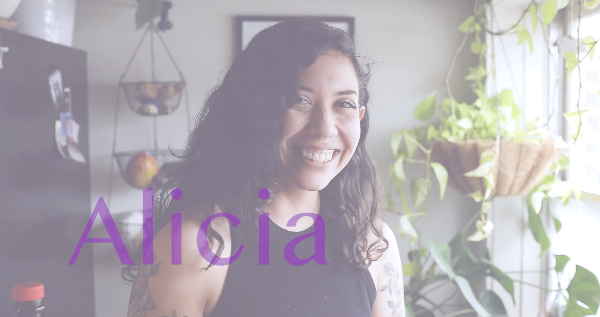
click on this cute still to watch the video!
Lost Lake bar manager Alicia just happens to be quarantined with a videographer — the supremely talented Moll Nye, to be exact. How convenient for all of us missing her sweet face! Together, Alicia and Moll show us why the simple recipes are often the best recipes.
CHEF FRED OPENS UP THE KETCHUP
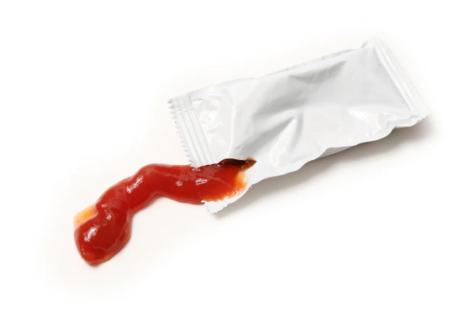
Have you ever looked at a bottle of ketchup and noticed that it almost always says "Tomato Ketchup"? It seems pretty redundant, but when you dive into this beloved American pantry staple, one realizes that this sauce is one of the oldest evolving condiments in history and has deep ties to globalization. Its history can be traced back to before 300BC where it is written about in a poem from the warring Chu states in China.
The timelines get a little confusing here because China had already turned inwards and banned sea trade at this point in the 1700s, but Hokkien traders were still doing so illegally on a massive scale. East Asia and Southeast Asia were divided into two condiment regions. The use of fish sauce died out in East Asia (minus small southern coastal regions) and fermented soybean products took its place, leaving fish sauce to reign supreme in Southeast Asia. This shift led to fish sauce that was still being produced in China to be traded to European traders. The Hokkien or Southern Min word for "fish sauce" at this time was "ge jiap" or "ke-tchup". In the 1730s, English recipes for ketchup began to pop up as ways to try and recreate this sauce. Most of them contained fermented walnuts or mushrooms. Many recipes and variations have been documented prior to wide-spread use of the "New World" ingredient, tomatoes.
Long story short, it was not until the early 1800s that tomatoes found their way into ketchup and it wasn't until after the Civil War that sugar was added. So as you can see, the formation of the (British) American colonies for precious metals allowed Europe to buy back into the Asian economy for industrialized goods, and yes, that includes ketchup. It is incredible to think that these little packets of sauce we squeeze out to dip our fries in could be so deeply ingrained into the world.
DEALER'S CHOICE WITH PAUL
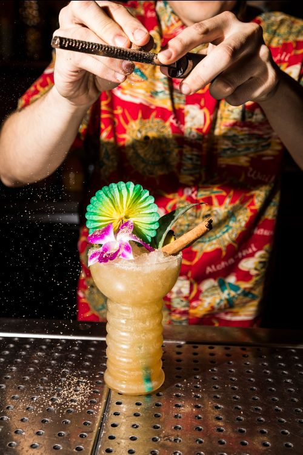
One of our newsletter subscribers (Hi, Austin!) wasn’t quite sure which cocktail he was in the mood for, so we asked him what his usual flavor preferences are. 'I enjoy coconut, cinnamon, passionfruit, and usually order a Jet Pilot, Mai Tai, Zombie, or Bunny’s Banana Daiquiri.' A real classics guy! We tapped Paul for a dealer’s choice suggestion:
"When thinking of combining the flavors of passionfruit and cinnamon, Trader Vic’s Voodoo Grog came to mind. Vic’s Voodoo Grog uses rum, grapefruit, passionfruit, and allspice together with a bit of egg white to give the drink a creamy texture. I decided to use cinnamon syrup in place of the allspice dram and incorporate coconut cream to give the drink some body. For the rum, a dry, lightly aged Jamaican or Martinique rum will do the trick. This is one of the rare examples of tropical fruit flavors and notes of island spice working harmoniously in the same drink — and this recipe also works well with gin! I hope you enjoy!"
Do What You Gotta Do
2 oz Jamaican Rum (Plantation Xamayca) or aged Martinique Rhum (Neisson ESB)
Combine all ingredients in a cocktail shaker with one cup crushed ice. (You can just bust up a bunch of freezer ice with a rolling pin!) Give it a good shake for about 5 seconds, then pour the entire contents into your cutest glass (we call that a 'dirty dump' lol). Top with more crushed ice, and garnish with tropical things! We like cinnamon and a swizzle stick on this one.
ON THE REQUEST LINE
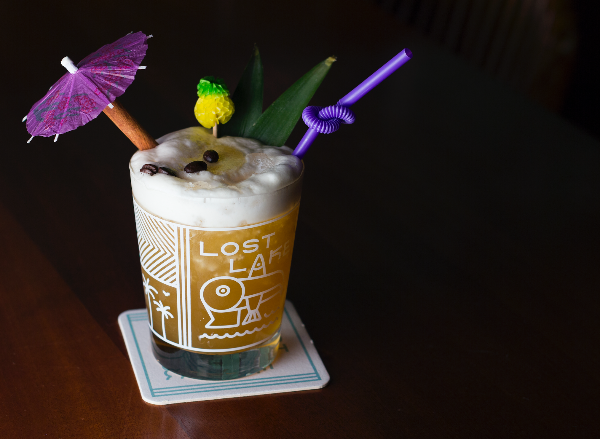
We got a couple different requests that can all be answered with one cocktail: A Lonely Island Lost in The Middle of a Foggy Sea!
This riff on the classic Mr. Bali Ha’i cocktail is from our second menu, and the name comes from a song of a similar name in Rodgers & Hammerstein’s musical South Pacific. Bonus: this recipe easily pivots to make a great spirit-free version, too!
One of the best parts about this drink is the ‘lonely island’ garnish: An island (a wedge of pineapple) with a palm tree (a green cocktail umbrella stuck through a cinnamon stick-trunk) and fallen coconuts below (little coffee beans).
A Lonely Island Lost in the Middle of A Foggy Sea
1 oz Clement Premiere Canne Martinique Rhum
.75 oz El Dorado 8 Year Rum
.25 oz Cruzan Blackstrap Rum
1 oz pineapple juice (Trader Joe’s makes the best non-fresh!)
.75 oz demerara syrup (from the first newsletter!)
.75 oz lime juice
.5 oz cold brew coffee
Combine all ingredients in a cocktail shaker with one cup crushed ice. (You can just bust up a bunch of freezer ice with a rolling pin!) Give it a good shake for about 5 seconds, then pour the entire contents into your cutest glass. Top with more crushed ice, and garnish with a ‘lonely island’ + other tropical things!
Your Special Island
2 oz pineapple juice
.75 oz lime juice
.75 oz demerara syrup
.5 oz cold brew coffee
Combine all ingredients in a cocktail shaker with one cup crushed ice. (You can just bust up a bunch of freezer ice with a rolling pin!) Give it a good shake for about 5 seconds, then pour the entire contents into your cutest glass. Top with more crushed ice, and garnish with a ‘lonely island’ + other tropical things!
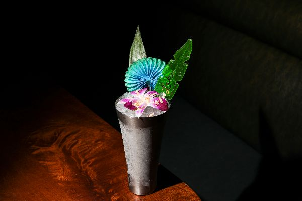
I was really excited to see 'From Pine to Palm / Like Ceremonies of a Pleasant Nature' pop up on the request line! It's kind of a weird cocktail, and it didn't sell very well when it was on our menu last year. It's a drink that's close to my heart, though, because it's a "Shelbin + Elbin" creation — that is, a recipe from me (Shelby) and Erin (Erin Hayes, former Lost Lake bar manager and current partner at Westward Whiskey!)
The name is adapted from Charles H. Baker's 1946 cocktail book Around the World with Jigger Beaker & Flask, and felt like a good fit because, to me, this cocktail tastes like an earthy, funky-sweet witch's potion. I hope you like this strange little swizzle as much as I do!
From Pine to Palm / Like Ceremonies of a Pleasant Nature
1.5 oz Palo Santo-infused Casa Magdalena Rum
.75 oz lime juice
.5 oz John D. Taylor’s Velvet Falernum
.25 oz fino sherry
.25 oz coconut cream (from the first newsletter!)
.25 oz pandan syrup
Combine all ingredients in a swizzle cup with one cup crushed ice. This can be a metal swizzle cup (like the photo), or any sturdy collins glass. Grab a bar spoon, a miniature whisk, a milk frother — any skinny kitchen tool that will really agitate it — and give this cocktail a good swizzle! You want to move your swizzle apparatus up and down as you shimmy it, incorporating the ingredients while chilling and diluting the drink, and allowing a nice layer of frost to build up on the outside of the glass. Top with more crushed ice, and garnish tropically!
Palo Santo-infused Rum
Plop one palo santo stick into a 750ml bottle of Casa Magdalena. Wait an hour or two, take it out. Voila!
Pandan syrup
Make simple syrup (equal parts white sugar and water, stirred over heat until all crystals dissolve), then add a few pandan leaves and let steep over low low heat for an hour. Pluck out the pandan and let cool. In Chicago, you can find pandan leaves at H Mart or Joong Boo!
Vince reminisces on Some Days Last a Long Time, Shannon talks about her favorite brown + stirred cocktail, a dance-like-no-one's-watching playlist from Mia, another crossword from Lost Lake Boyfriend's Club member Mike, and more recipes from the request line! And as always, the request line is open — send us a DM on Instagram. See you Tuesday!
Today (Tuesday, March 31st, in case you were wondering), Vince takes us down memory lane with a scotch in hand, Alex shares some cocktail history, Fred tells us that now is the time to get to know our microwaves, we answer some calls on the request line, boldly use a pen to do the crossword, and (kind of) celebrate #SHIFTEASE!
Thank you so much for all of your kind messages and hilarious tags on Instagram. It feels great to be connected with you all!
Love,
Shelby
VINCE: SOME DAYS LAST A LONG TIME
Walking into Lost Lake for the first time is an experience I won’t ever forget. I had heard it was a rum bar and that I should be prepared for extravagance everywhere. The drinks will have a ton of garnish, that crazy banana leaf wallpaper, and a cave with pufferfish lighting. I picked up the menu with hesitation; I knew nothing of rum or tropical cocktails. What was good? Half of these ingredients I had never seen before — how could I be sure it was delicious?
I landed on the “Some Days Last a Long Time”. This had a scotch base, lemon was the only citrus that appeared, and it ended with Letherbee Barrel Aged Absinthe. There was no rum, though, and no pineapple, and it didn’t come on fire. How could this be? This broke every notion I had of what Lost Lake would serve — much how working there broke the mold of what I thought a bar could be.
The choice of Bank Note Scotch Whisky here is an excellent one. The blend of Speyside, Highland, and Lowland whiskies produces a mellow finish with a light fruity aroma. I would later learn scotch has a solid foundation in tiki drinks: the “London Sour” — a Trader Vic original from 1963 — forgoes rum for scotch as the base as it riffs on the classic Mai-Tai. An interesting spin for Some Days Last a Long Time is the inclusion of sherry. Using Oloroso adds a distinct nutty aroma that also imparts flavors of tobacco. Also, in case you are like me, don’t be intimidated by the use of absinthe. We are only using a dash here, and it will give you that essential brightness with a ton of herbal notes like elderflower, anise, and gentian root. The crucial last step is the nutmeg garnish, a little freshly grated on top brings the whole thing together!
Some Days Last a Long Time
1.5 oz Bank Note Blended Scotch Whisky
0.5 oz oloroso sherry
1 oz coconut cream (from newsletter #1)
1 oz lemon juice
0.25 oz rich simple syrup (like regular simple syrup, but with two parts sugar to one part water)
2 dashes Lagavulin (or another spendy, smoky scotch)
1 dash absinthe (we use Letherbee Barrel Aged Absinthe)
Combine all ingredients in a cocktail shaker with one cup crushed ice. (You can just bust up a bunch of freezer ice with a rolling pin!) Give it a good shake for about 5 seconds, then pour the entire contents into your cutest glass. Top with more crushed ice, and garnish with tropical things! We like freshly grated nutmeg on this one.
MAI TAI HISTORY LESSON WITH ALEX
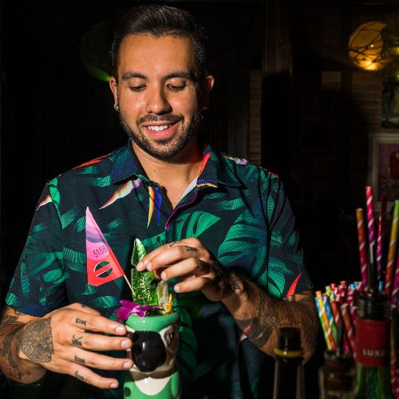
When I had returned home to Chicago after graduating college in Iowa, I sat on my parents’ couch YouTubing videos on how to bartend and make cocktails. The very first video I watched explained to me how to prepare a proper Mai Tai. A man named Tim (or Zach, or Steve) stood behind a makeshift thatch roofed bar in front of a green screen. The superimposed backdrop was some beach somewhere. The bartender wore a pastel sky blue button down and faded indigo washed jeans. His hair was spiked, he wore sunglasses, and I was enamored. On the bar top were a couple of Boston shakers, a few plastic juice containers without labels, and one bottle of Meyer’s Dark Jamaican Rum.
“Mom, I know how to make a Mai Tai.”
“Oh?”
“Pour out a few ounces of dark rum, add some orange juice, a little bit of pineapple juice, grenadine and simple syrup. Shake with ice for a few seconds and dump into a glass. You can add a cherry, a lime wedge, or whatever you want for garnish.”
“Very cool. Look up how to make me a Tequila Sunrise.”
I was on it.
It was not until later that summer after having met Shelby Allison and Paul McGee that I learned all of my research and studying was for nothing. “The Mai Tai,” they claimed, “is probably the most bastardized cocktail ever.” Well, shit.
As it turns out, we can thank Victor Bergeron (you might know him as Trader Vic) for the creation of the original Mai Tai in 1944 — but his friend / rival / enemy / fellow tropical enthusiast Don the Beachcomber refuted that claim. Don claimed that Trader Vic had just riffed on one of his cocktail recipes, The QB Cooler. Vic took up the pen shortly thereafter and wrote in his cocktail book Trader Vic’s Bartender’s Guide: “anyone who says I didn’t create this drink is a dirty stinker.”
Origin story aside, most cocktail enthusiasts tend to favor the Trader Vic model. Originally, Bergeron created the drink to showcase Wray and Nephew’s 17 year old rum. To that rum he added lime juice, orgeat (almond syrup), orange curacao, and sugar, creating a tropical cocktail with a velvety texture (you can thank the orgeat for that) and notes of citrus and spiced orange. At Lost Lake, we add a hefty bouquet of mint that plays very well with the nuttiness of the orgeat and flavors of the rum.
When Wray and Nephew’s 17 year was no longer available to Bergeron, he substituted the 15 year. It was not until he made his cocktail famous in Hawaii (where he had been hired to work the cocktail menus at a few island hotels) did his cocktail creation start to stray. In the late 50s and early 60s, he added pineapple and orange juices, veering from his original recipe toward a sweeter version.
In his book Imbibe, famed cocktail historian David Wondrich states that a popular drink during the golden age of cocktails (we’re talking 1850s and 60s) named The Knickerbocker could be seen as a precursor to the Mai Tai. The Knickerbocker, according to Wondrich, called for Santa Cruz rum, lime or lemon, raspberry syrup, and some curacao. “Similar drink, different island,” says Wondrich. In 2020, however, many cocktail bars the nation over — Lost Lake included — continue to build upon Trader Vic’s original recipe. Here is one for you to make at home.
Trader Vic's 1944 Mai Tai (or as close as we can get)
1 oz Neisson Eleve Sous Bois (aged Martinique Rhum)
.5 oz Smith & Cross Overproof Jamaican Rum
.5 oz Appleton Reserve Aged Jamaican Rum
1 oz fresh lime juice
.75 oz orgeat (we like Small Hand Foods, available at Binny’s)
.5 oz Pierre Ferrand Dry Curacao
.25 oz demerara syrup
Combine all ingredients in a cocktail shaker. After squeezing lime juice, drop one half of the spent hull into the shaker, too. Add cubed ice and shake the living daylights out of this thing. Your motto should be “Too cold to hold!” Dump the entire contents into your cutest double old fashioned glass, and top with some crushed ice (or busted up freezer ice). Garnish with an orange peel and a spanked (fun!) mint bouquet.
DESSERT TIME WITH FRED!
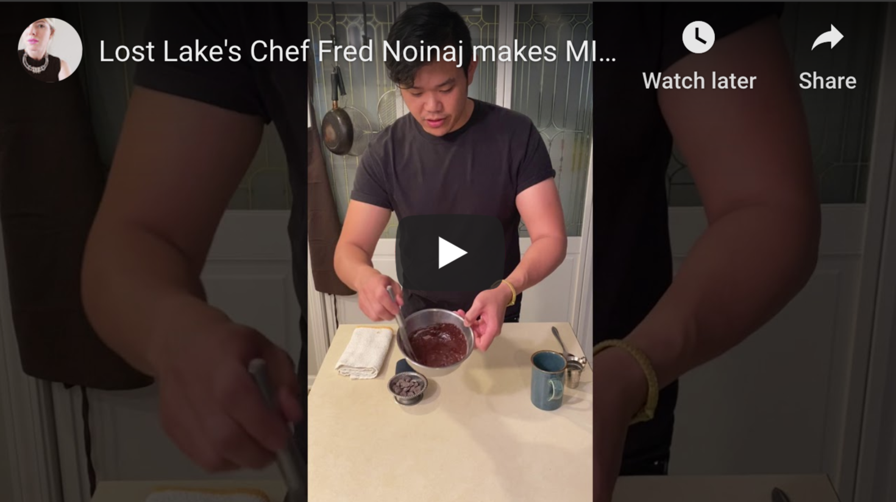
click it! it's a video!
One of my best friends has been hyping up microwaved mug cakes for a while and she totally swears by them. I finally gave it a shot — and for not being a sweets person (besides ice cream, which would be excellent on this), I really enjoyed the outcome. I cook for a living so when I do cook for myself at home I keep it simple. Mug cakes are so easy, versatile, and really remind me of playing with an Easy Bake Oven as a kid. They are a perfect treat after a long day at work or if you randomly have a craving for something sweet. Anyone who cooks at home at all will have a majority of these items in their pantry. You can easily swap out the olive oil for butter, coconut oil, or other cooking oils. You can experiment with different amounts and kinds of sugar and milk too. It is a fun way to quickly make a satisfying dessert.
Pro tip: Make a double batch of the mug cake and save the second one to make cake shakes!!! I used half a mug cake and big scoop of mint chip with some milk in the blender.
Vegan Chocolate Mug Cake
2 1/2 tbsp all purpose flour
2 tbsp sugar
1 1/2 tbs cocoa powder
1/4 tsp baking soda
1/8 tsp salt
1 tbs olive oil or coconut oil
3 tbs oat milk or almond milk
1 tbs chocolate chips
Equipment
12-14 oz ceramic mug
spoon or fork
Directions
- In the mug, add all your dry ingredients and mix.
- Add the oil and oat milk, mix well
- Top with chocolate chips
- Microwave on high for 50 seconds, then check the consistency. Since I like mine only a little bit gooey, I go close to 55-60 seconds. It depends on your microwave, so play around with it — now is the time!
REQUEST LINE: SHERRY NO-NO
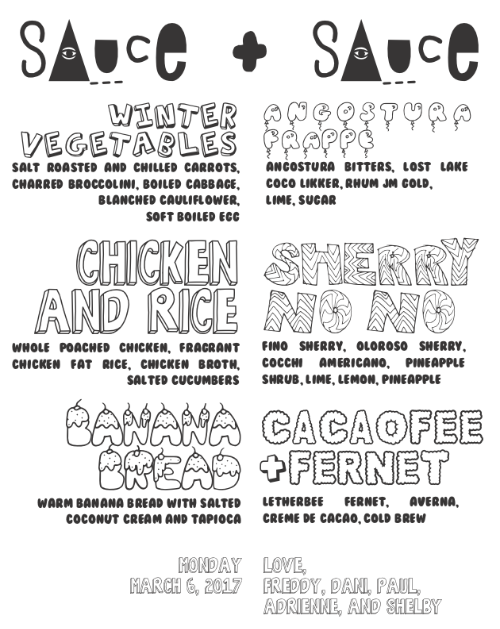
This cocktail came through on the request line and I was so happy to see it! We created this cocktail to serve at the first pop-up we did with Chef Fred, before he started as our executive chef. There had been a fire at the bar the spring prior, and though it would eventually take over a year to resume food service, I had asked Fred to join our team very early on in the recovery process. A little too early. So early, in fact, that he spent more than a few months hanging out in the kitchen of Chicago Athletic Association while I told him "Next month, for sure!" about six times in a row. During that wait, we hosted a pop-up together called SAUCE + SAUCE! It was all backwards dishes and upside down cocktails. That's where Fred first shared his ketchup research with me (and with you in last Thursday's newsletter!) and when I realized what a thoughtful chef he was. I'm so glad he waited around for us!
The name of this cocktail kind of comes from Dawn Penn's "You Don't Love Me (No, No, No)." And because the cocktail was supposed to be a backwards cocktail, we loaded her up with modifiers and just skipped the base spirit. This cocktail is available for endless experimentation — you just need a blend of sherries that speak to you (manzanilla! amontillado!), some bright fruit, crunchy sugar, and a straw! It's also a great cocktail to make at home because you can have a few without getting blasted and then having to spend the rest of the night tossing around with weird quarantine dreams.
Sherry No-No
1.5 oz fino sherry
0.5 oz oloroso sherry
1 oz Cocchi Americano
0.25 oz Pok Pok Pineapple Shrub (you can make your own pineapple shrub aka vinegar!)
0.5 oz lime juice
½ tbsp sugar mix (equal parts raw sugar and white sugar)
½ cup pineapple chunks (real ripe ones are best)
2 lemon wedges, trimmed
Add the pineapple chunks first, then sugar, then the liquid ingredients. Reeeeally gently (like seriously), press the fruit with a muddler (or wooden spoon) and incorporate the ingredients a little. You don't want to pulverize the pineapple, and you don't want to splash yourself in the face. Then add some crushed ice, grab your swizzle stick (or milk frother or long skinny spoon or baby whisk) and get to swizzlin'! Keep adding ice as you go, swizzling until you see a nice later of frost forming on the outside of the glass. Garnish with a bouquet of mint for aromatics! Like a great mojito, you want to get a little crunchy sugar in each sip.
REQUEST LINE: SPINNING IN INFINITY
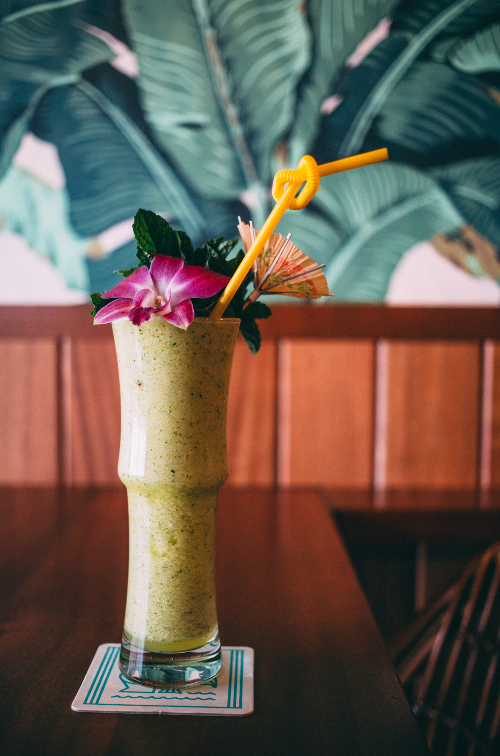
Spinning in Infinity is a very beloved cocktail and an off-menu favorite at Lost Lake, so I wasn't surprised to get more than one request for this old girl! This recipe is a riff on the classic "Missionary's Downfall," and the name comes from a Paul Simon lyric: angels in the architecture, spinning in infinity. Seems like a fitting title for a host of reasons to me ¯_(ツ)_/¯
Spinning in Infinity
1 oz Letherbee Gin
.5 oz Smith and Cross Overproof Jamaican Rum
.5 oz Appleton Signature Blend
1 oz honey
.5 oz lime juice
.5 oz peach liqueur
1 cup pineapple chunks
6 mint leaves
Combine all ingredients in a blender with one cup crushed ice. Blend until smooth. Garnish with a big bouquet of mint.
Also makes a great spirit-free cocktail!
No Spins
1 oz passionfruit syrup (we like Small Hand Foods, available at Binny's)
1 oz honey
1 oz lime juice
1 oz pineapple juice
1 cup pineapple chunks
6 mint leaves
Combine all ingredients in a blender with one cup crushed ice. Blend until smooth. Garnish with a big bouquet of mint.
CROSSWORD TIME
Another excellent grid from Lost Lake Lovers Club member Mike Morell, and this one has a cute twist. "Have at it!" he says. Download the puzzle here, and look for answers in Thursday's puzzle!
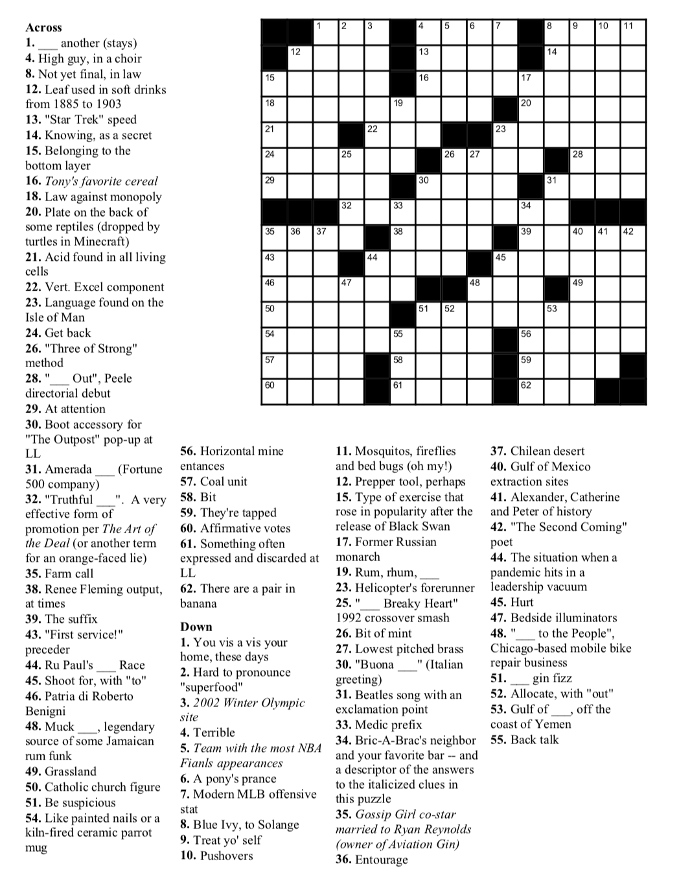
#SHIFTEASE
So, today is supposed to be #SHIFTEASE. That's our monthly charitable party that we've hosted on the last Tuesday of every month since the early 2017. We just kicked off the fourth year of the event, and we were getting close to having raised $30k for organizations fighting for gender, racial, and economic justice right here in Chicago. Though our luck is down right now (luck is down in general, I guess), we know that there are still ways in which we can try to help our neighbors. And since we can't make cocktails and donate real money, we are leveraging our platform to raise awareness for a cause that we believe in! Later tonight we'll be in our Instagram Stories posting some easy lil "shifties" you can make at home and share more information about this month's organization: Support Staff!
Support Staff*is collective of hospitality professionals and community builders working alongside mental health professionals to change the landscape of Chicago's hospitality industry. In partnership with Pilot Light Chefs and a variety of community advocates + non profits we are launching Comp Tab Relief Fund.
Comp Tab is a community-based relief fund created by and for hospitality professionals, with sources of financial aid and alternative resources for those in the Chicago Metropolitan Area immediately affected by statewide closures.
To learn more about Support Staff's mission, donate, and spread the word,click here.*
I'm pleased to present you with our fifth newsletter! This one is really good: you've got three (THREE!) brown n' stirreds from Shannon, a very sweaty playlist from Mia, fluffy coffee by Fred, and two calls coming in on the request line.
Please keep tagging us on Instagram with your creations, questions, and requests. We can't wait to get back to the bar with you!
Love,
Shelby
SHANNON'S GO-TO BROWN N' STIRREDS
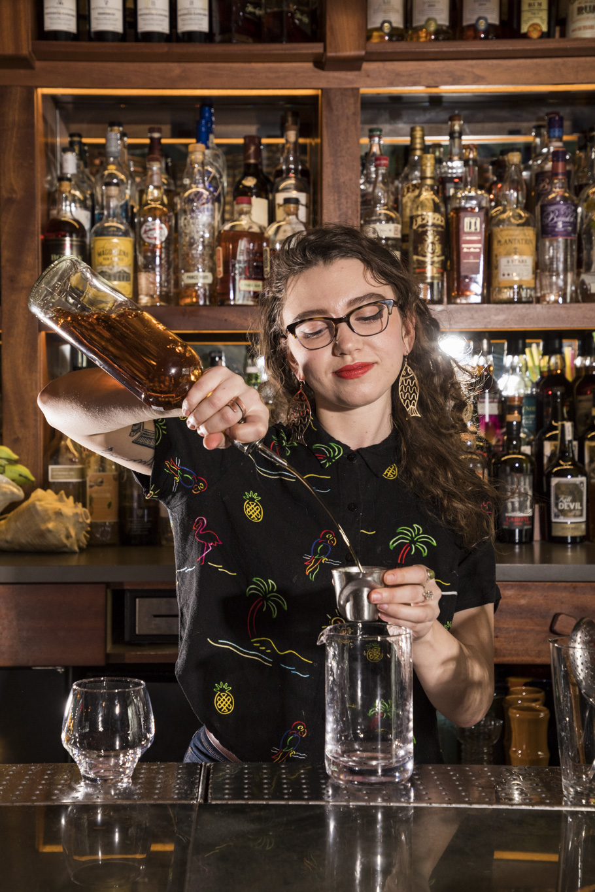
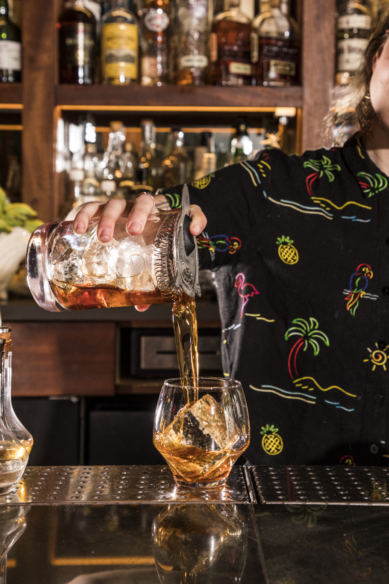
“It’s not the most festive looking cocktail on the menu, but…” is a frequent phrase I use when a guest asks about our brown-and-stirred options. In a space filled with color and decor (have you seen our garnish station??), it feels only right to give folks a little warning that they won’t get an umbrella in their Corn N’ Oil. However, not all buts are bad; more often than not, I finish that sentence with “it’s my favorite on the menu.”
One of my favorite things about brown-and-stirreds at Lost Lake especially is that they’re a little enigmatic, not unlike our bar itself. People who come in for the first time have said that they walk by us all the time and had no idea what what was going on inside. When a guest sees another get a cocktail with only a big rock (shout out to Just Ice for keeping our cubes clear and cute!) as its ornamentation, I think they’re similarly confused.
What isn’t obvious to the eye is that a lot of our stirred cocktails absolutely maintain a tropical flavor profile without the use of juice or syrups. Rum/rhum, with its very few rules for production, offers a great range of flavors that can veer fruity or spice-forward and can have those qualities gracefully amplified with other spirits. For example, our Plantation Pineapple Kingston Negroni does just that. While the base spirit is clearly pineapple forward, the Campari contributes a beautiful bright and bitter orange flavor with the vermouth running interference with its delicate richness and dried stone fruit notes.
Let’s stir up some drinks to keep from getting to stir-crazy, shall we?
Three of Strong This cocktail was one of my first favorites when I first started having shifties at Lost Lake. The bourbon and aged agricole give this drink a decidedly oak-forward backbone but each of their nuances shine: the American oak that holds aging bourbon gives it a little vanilla and coconut; and, the French oak which houses the agricole lends its self to a more tannic, tea-like hint. The sherries bring a bit of richness and raisin, making this a fruit forward but meticulously balanced bevvy.
1oz Evan Williams Bourbon
1 oz Clement Select Barrel
.5 oz Pedro Ximenez Sherry
.5 oz Palo Cortado Sherry
Combine spirits in mixing glass, stir with ice for around five to seven seconds (depending on your ice), strain into a tumbler with fresh ice. Express orange peel over the tumbler and discard.
Art of Choke An original of our neighbors down Milwaukee Avenue (hi, Violet Hour!), this pleasantly medicinal drink has some of my favorite components: Cynar, Green Chartreuse, and of course, rum! The combination of Cynar and Green Chartreuse gives off a lovely, darkly floral element with a savory undertone. The multi-island rum we use for it at Lost Lake, Banks 5, suits this cocktail perfectly. Its balance of five very different regions of rum making lends a funk that stands quite nicely with the drink’s other herbaceous ingredients.
1 oz Cynar
1 oz Banks 5 Rum
.25 oz Green Chartreuse
bar spoon lime juice
bar spoon demerara syrup
4 mint leaves (I’ve used a couple of dashes of mint extract before instead)
Combine all ingredients (including mint leaves) into a mixing glass and stir. Strain over fresh ice.
Old-Fashioned I love getting dealer’s choices for a rum old-fashioned! It’s like being given a list of enabling constraints. This one right here is one I like to make for myself but I feel like an old-fashioned should be a little bit of choose-your-own-adventure.
1 oz Smith and Cross
.5 oz Plantation Original Dark
.5 oz Cynar
2 dashes orange bitters
1 d Angostura bitters
Combine all in a mixing glass, mix with ice and strain over fresh ice. Express orange and discard peel.
Stir and sip safely and soundly, friends!
MIA DANCES LIKE ONLY MIA'S WATCHING
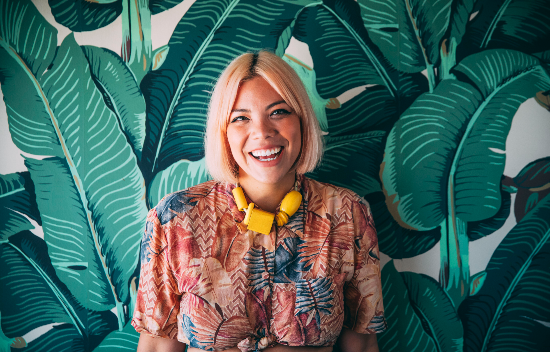
Click that bright pink "move it or lose it" button to hear Mia's mix!
I’ve never been a work-out-at-home kinda gal, but desperate times...
About 3 days into self isolation, all my pent-up energy was turning into anxiety and restlessness. I was bored out of my mind, literally scrubbing a light switch while listening to Robyn, when I was suddenly possessed. I flew down my basement stairs, locked the door, and hooked up the bluetooth speaker; I decided that didn’t really matter how I moved my body, as long as I was moving it. I proceeded to dance my damn face off. The sweet, sweet release was such a game changer that I started gifting myself 45 minutes a day of moving it. It’s extremely helpful because it’s the only meditative thing that works for me other than puzzles, and I’m out of those.
CHEF FRED MAKES DALGONA COFFEE
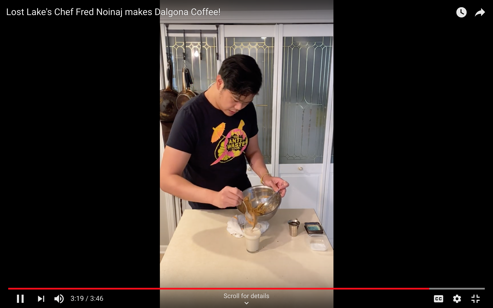
I'm a video! Click me!
A lot of us have morning routines that have been affected by the need to quarantine and shelter-in-place orders. Some of us go to the gym, go for a run, hit up the farmers market, or just grab a coffee on the way to work. As someone whole loves caffeine, coffee, and just the overall routine of dropping by my local coffee shop in the morning, I felt the need to change up the french press (using questionable coffee) I have been making every morning for the last few weeks.
Dalgona coffee has been making waves on the internet since South Korea began its coronavirus lockdown. It is a deceptively simple coffee preparation with high aesthetic rewards and caffeine content. The name was coined by South Koreans because of its close color and appearance to a very popular street vendor snack called Dalgona candy, which is similar to honeycomb candy, angel food candy, karume-yaki in Japan, or seafoam candy in parts of the US.
I normally drink black coffee, but its nice to change it up every once in a while. It takes just about the same amount of time to prepare a normal cup of coffee and with warm weather coming up soon, iced coffee season is just around the corner. Give it a shot, get creative! There's a lot of variations that make it suitable for all caf-fiends!
Dalgona coffee (one serving)
1 tbsp instant coffee
1 tbsp granulated sugar
1 tbsp very hot water
8-10 oz chilled oat milk, almond milk, or soy milk in a glass
Optional
Ice
pinch of salt
Equipment
Mixing bowl
Whisk
Spoon
Kitchen towel
Directions (if whisking by hand)
-Take the kitchen towel by transverse corners, roll and loosely tie to form a round base to set your bowl on. Add the coffee, sugar and hot water to a mixing bowl. Start by slowly stirring the contents to dissolve and gradually increasing speed.
-Once the mixture starts to lighten in color and foam up, add a pinch of salt(optional). Continue to whisk until medium peaks are formed(2-3 more minutes depending on whisking speed).
-Spoon the whipped coffee on top, give a little stir and enjoy!
NOTE: This entire process can be done in a stand mixer with a whisk attachment as well.
REQUEST LINE: NO BYE/NO ALOHA
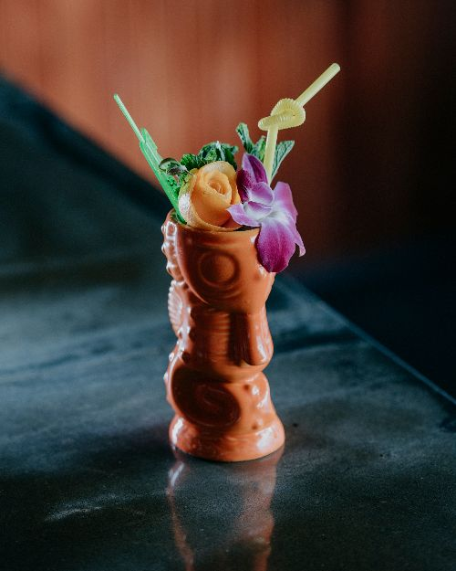
This is an oldie, but a very good goodie! It's not not a Fogcutter, but you'll forget all comparisons if you mix this up while letting The Breeder's No Aloha blast on repeat.
No Bye/No Aloha
1.5 oz Fords Gin
.5 oz Dr Bird Jamaican Rum
.5 oz oloroso sherry
.25 oz orgeat (we like Small Hand Foods, available at Binny's!)
.5 oz passionfruit syrup (we like Small Hand Foods, available at Binny's!)
1 oz lemon juice
.25 oz ginger (try BG Reynold's, available at Binny's!)
.25 oz John Taylor Velvet Falernum
2 dashes Angostura Bitters
1 dash absinthe
Combine all ingredients in a cocktail shaker with one cup crushed ice. (You can just bust up a bunch of freezer ice with a rolling pin!) Give it a good shake for about 5 seconds, then pour the entire contents into your cutest glass (we call that a 'dirty dump' lol). Top with more crushed ice, and garnish with tropical things!
REQUEST LINE: PAINKILLER
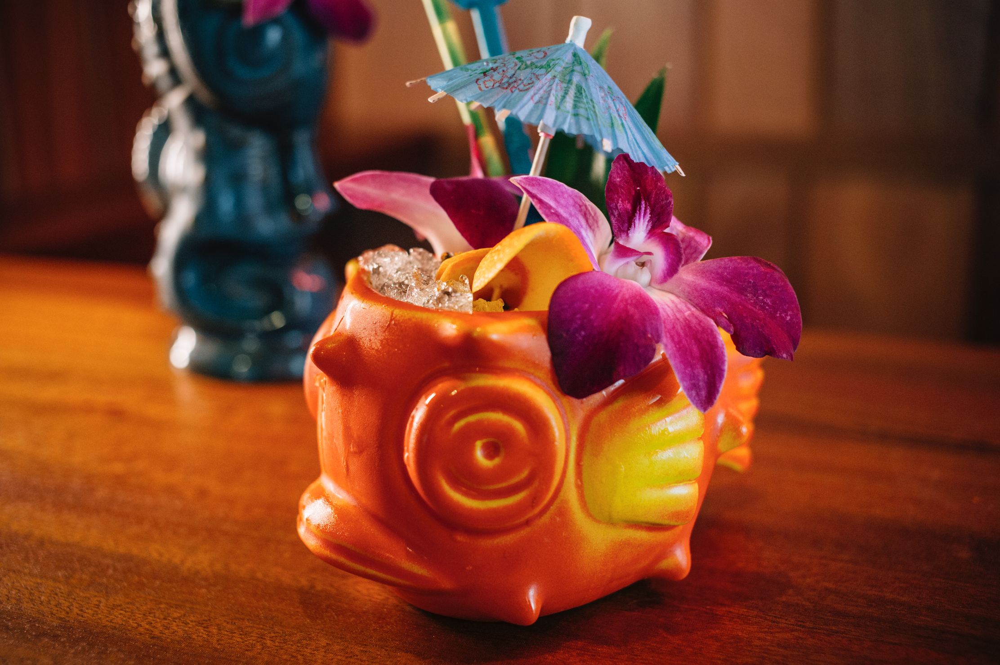
Are we all self-medicating by now? Okay, good. Glad we're on the same page.
This is a classic tropical cocktail from the Soggy Dollar Bar on Jost Van Dyke in the British Virgin Islands. The bar gets its name from the sopping wet currency guests arrive with after having to wade through waist-deep water to get to the bar — and they've got a sign that reads 'A Sunny Place for Shady People.'
The original Painkiller is made with Pusser's Rum and orange juice — but we never, ever use orange juice in our cocktails. If a classic recipe calls for orange juice, we generally modify the build with lime and orange curaçao to achieve those bright orange flavors. In this case, however, we took the call for orange juice in a different direction: passionfruit!
Painkiller #3
1 oz Real McCoy 5 Year Rum
1 oz Coruba Dark Rum
1.5 oz coconut cream (newsletter #1!)
.75 oz passionfruit syrup
.75 oz pineapple juice
.75 oz half n' half
Combine all ingredients in a cocktail shaker with one cup crushed ice. (You can just bust up a bunch of freezer ice with a rolling pin!) Give it a good shake for about 5 seconds, then pour the entire contents into your cutest glass (we call that a 'dirty dump' lol). Top with more crushed ice, and garnish with tropical things!
Welcome to the sixth edition of the newsletter! Today we're shakin' up a classic with Alicia, muddlin' a spirit-free with Andy, colorin' with Laura, and pickin' up some calls on the request line!
We're in the fourth week of Lost Lake's closure, and it's looking like another four weeks ahead (at least). Your kind notes, tags on Instagram, and newsletter requests are keeping us all engaged in our work and connected to one another — and to you. A light in the dark! Thank you, thank you, thank you.
love,
Shelby
ALICIA IS THE BEE'S KNEES
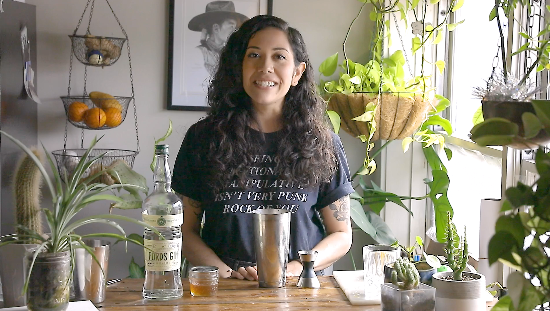
click me! i'm a video!
You're all making your favorite cocktails (and making them over and over and over and over...) and so are we! Here's Alicia making a Bee's Knees — Mollie's go-to order and a recipe you can use as a base for endless experimentation.
Thanks for the cute video, Alicia and Moll! Love love love seeing your faces.
ANDY'S NO-JITO
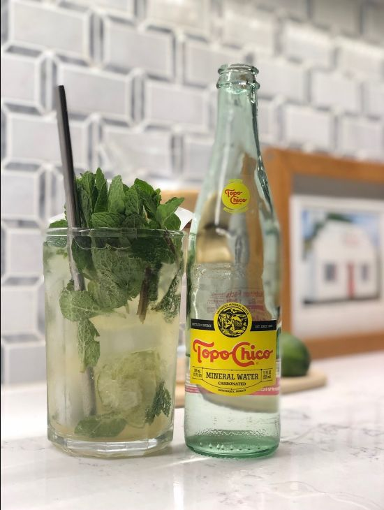
The Mojito is one of the best cocktails we make at Lost Lake. For me, as of April 14th of last year, it is THEEEEEEEE best cocktail at Lost Lake. (I quit boozing on that date... I was way too good at it 🤷🏼♂️😂S/O to former Lost Laker and my big brother John “Big Ging” Allison for the inspiration.) However, we are going to call this one the No-Jito. It’s a certified 'Spirit-Free Banger.' The glass we use for this drink at Lost Lake is referred to as a 'Fat Bottom' amongst the staff because of its thick glass base. I’m stuck at home right now and don’t have a 'Fat Bottom' soooo enter the 'Thicc - Body.'
You will need fresh mint, lime, soda water (Topo Chico is my favorite because ima bad bitch), and something to muddle with — in my case it is the end of an ice cream scoop.
Step 1: Spank that mint and drop it in the glass first. Cut two lime wedges (half of a lime) and drop those in, too. I cut my lime half into quarters.... idk why. Add one tablespoon of demerara sugar. I’m using the sugar I brought back from the Neisson Distillery in Martinique. RIP to me drinking Ti Punch — the actual best cocktail to ever be invented .
Step 2: Muddle!!! Make sure the mint is under the limes so it doesn't get totally pulverized, and let some of the sugar stay crunchy.
Step 3: Free pour yourself an ounce or two of soda water and give it a little stir. Now you will need to crush some ice — I used ice out of my freezer in a shaker tin. If you don’t have a tin you’re gonna have to get creative.
Step 4: Add the crushed ice and top it with more Soda Water. Another quick stir and throw the rest of the mint up top for the garnish. Booooom! You now have yourself a Patio Pounder as I like to call it. Great for any occasion.
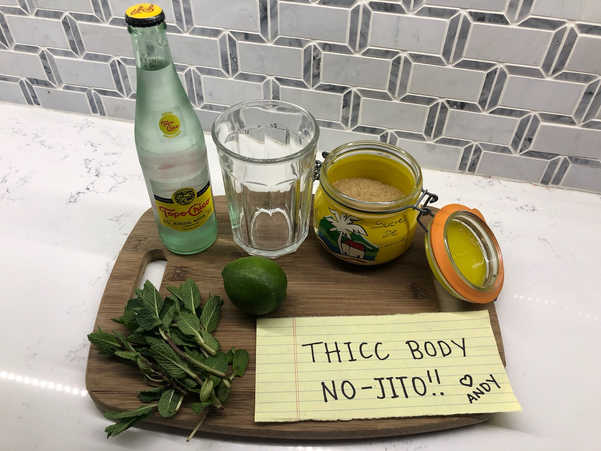
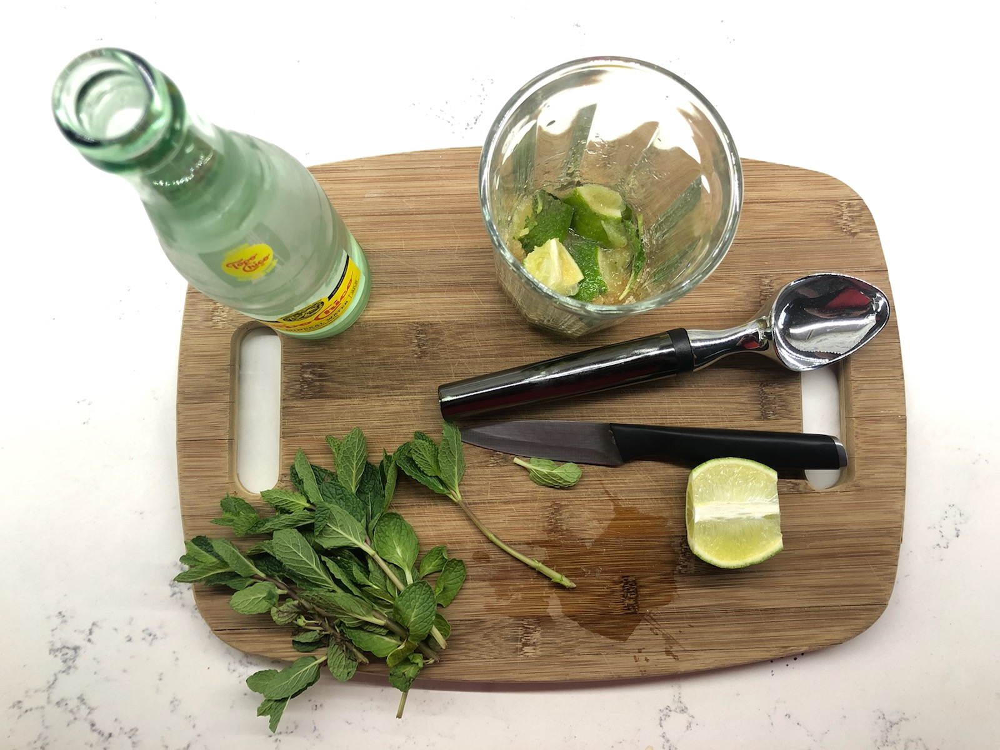
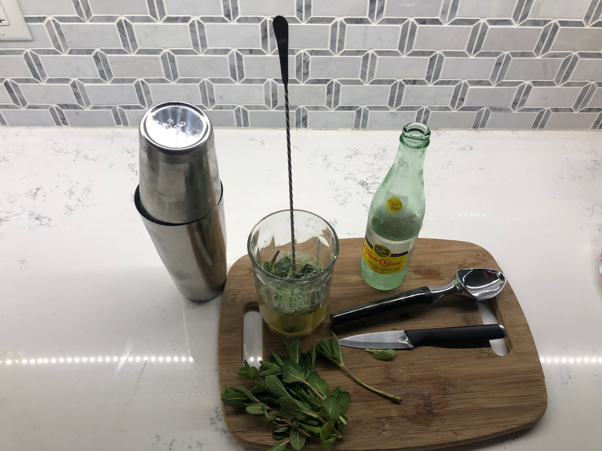
LAURA WANTS TO BE WHERE THE PEOPLE ARE
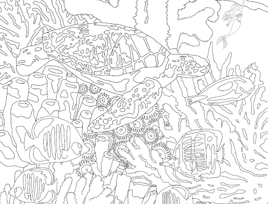
Laura's got another adorable (and adorably named: I Want to be Where the People Are) coloring page for us! Click here to download and print the page, and tag us with your finished version!
REQUEST LINE: LOST LAKE PLAYLIST
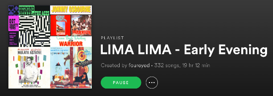
We got a request for a Lost Lake playlist! When we opened Lost Lake in 2015, I started this playlist and just kept adding more and more songs as the years passed. At the end of the 2019, my staff lovingly (if threat of mutiny can be loving) let me know that they would not listen to it for one. more. moment. I have a hunch that if they had the choice to A) be stuck inside alone for two months while the world roils in a viral pandemic or B) listen to this playlist again, they'd unanimously choose A.
But! You haven't listened to these songs for five straight years of your work life, so please feel free to enjoy without danger of slipping over the edge of sanity.
REQUEST LINE: STRANGER IN PARADISE
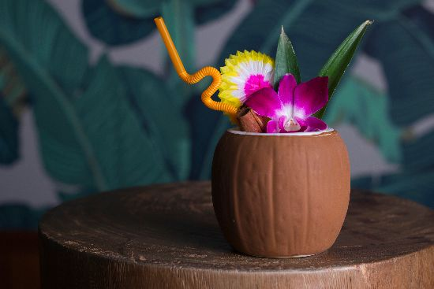
This cocktail is from our second menu, and continues to be an off-menu favorite amongst Lost Lakers. It's no wonder: funky rhum agricole and spicy falernum take a ride on a fluffy cloud of pineapple juice, and a little lightning bolt of absinthe electrifies the whole thing. Dang!
Something I've learned over the last few years is that this little rum bar's guests really like tequila! Good thing they go together so well.
Combine all ingredients in a cocktail shaker with one cup crushed ice. (You can just bust up a bunch of freezer ice with a rolling pin!) Give it a good shake for about 5 seconds, then pour the entire contents into your cutest glass (we call that a 'dirty dump' lol). Top with more crushed ice, and garnish with tropical things! We like a cinnamon stick (snapped in half to release those good smells) on this one.
REQUEST LINE: LIKE THE SUN IN SOLUTION
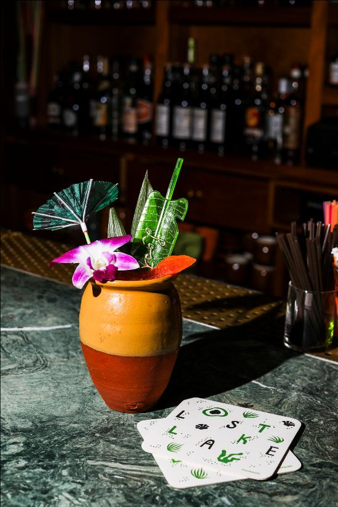
Another Shelbin + Elbin cocktail on the request line! This was from our 2019 menu, and it (like that entire menu, really) was real departure from our usual Lost Lake style. Using corn (CORN!) and pandan syrup, the resulting flavor profile is a wacky and wonderful combination of savory + earthy + nutty. I borrowed the name from a Tom Robbins line about tequila, but this recipe doesn't have any tequila sooo ¯_(ツ)_/¯ Sometimes it just feels right and you go with it anyway!
For all recipes that call for mango puree, we use the Perfect Puree brand at the bar — but (and maybe this is because I'm quarantined with a seven month old) you could try baby food??! Or just get a real mango and put it in the blender.
Combine all ingredients in a cocktail shaker with one cup crushed ice. (You can just bust up a bunch of freezer ice with a rolling pin!) Give it a good shake for about 5 seconds, then pour the entire contents into your cutest glass (we call that a 'dirty dump' lol). Top with more crushed ice, and garnish with tropical things! We like a cinnamon stick (snapped in half to release those good smells) on this one.
Corn-Coconut Milk
It's fuckin' weird, but it's fuckin' good. Just get yourself a can of corn and a quarter can of full-fat coconut milk, toss them in the blender and voilà! Corn-coconut milk!
CROSSWORD KEY
Oops! Forgot to include this in Thursday's newsletter. Thanks to Lost Lake Lovers Club member Mike for another VERY DIFFICULT puzzle!
Welcome to the seventh edition of the newsletter! This weekend is gonna be all about cocktails in coupes. (Really surprised it took me this long to lean into an "all couped up" joke.) Louise is Dancin' and Prancin', Alan shares his fave warm weather blender drink, Alex answers a call on the request line for a smoky mezcal cocktail — and each recipe is served on a stem!
And remember, always handle your stemmed glassware by the stem! (Hey, if we don't have time to really focus on our pet peeves now, when will we ever?! ¯_(ツ)_/¯)
love,
Shelby
DANCIN' AND PRANCIN' WITH LOUISE
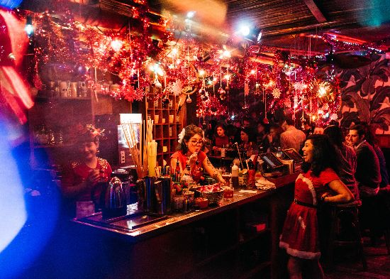
As soon as I was hired in September at Lost Lake, I started to hear about Jingle Bell Square, and the excitement it generated. Despite hosting and attending holiday pop ups in the past, nothing could quite prepare me for the magnitude of this one. All other places' decorations pale in comparison with the tinsel-elf-explosion that is Lost Lake in December! Every visible surface of the bar is adorned in holiday cheer and dripping with merriment.
The task of transforming the space is a labor of love, as every staff member comes in to help decorate. As a person who was spending their first Christmas away from their hometown in North Carolina, this decorating process made me feel a sense of unity and family.
No detail was left out during the event, from the decorations to the personalized holiday outfits each staff member chose. A big shout out to Village Discount for supplying me with not only a perfect elf dress, but also a LED light up sweater. The music was a holiday curated playlist that spanned from Madonna to Nat King Cole. We also featured a limited holiday menu with thematically named drinks, such as the Dancin' and Prancin', which balanced out its tequila base with ginger, hibiscus, lemon and a splash of bubbles.
It is great to work in a space where the labor put into an event is appreciated by the guest. Each night the bar was packed with eager faces. My roommates came in so many times, they almost died from egg nog consumption!
I look forward to being with the Lost Lake family again soon. Until then, I'll be home drinking Dancin' and Prancin's!
Dancin' and Prancin'
.75 oz Luna Azul Blanco Tequila
.74 oz JM Blanc Rhum Agricole
.5 oz lemon juice
.5 oz ginger syrup
.5 oz Appel Hibiscus Grenadine
2 oz sparkling wine
Add all ingredients except sparkling wine to a cocktail shaker with ice. Shake it hard! Strain into cocktail coupe and top with sparkling wine. Merry merry!
Ginger Syrup
We make a very spicy ginger syrup by juicing a shitload of fresh ginger and making a simple syrup with equal parts ginger juice and sugar — stir over heat until all crystals dissolve.
Appel's Hibiscus Grenadine
This is a rare recipe for Lost Lake in that we buy in the syrup — usually we (and by we, I mean our prep boss Mikesha) make everything in house. You could make a simple syrup with a strong hibiscus tea in lieu of plain water, or you could follow Todd Appel and see if he's got any available for delivery!
ALAN'S FAVE: COCO FRAPPÉ
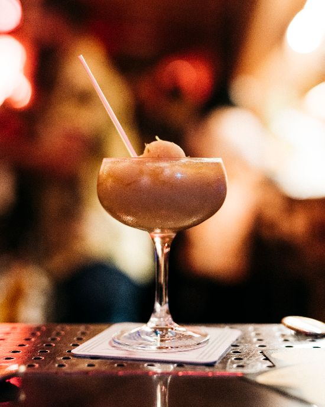
The Coco Frappe is my favorite cocktail to have at Lost Lake during the spring and summer time. It’s basically a frozen coconut daiquiri, but with some Lost Lake finesse. I know some of you can have frozen drinks year-round, but this is a seasonal cocktail for your boy from Arizona. Luckily, we’ve been blessed with some warm weather this week which means it’s time to bring back the Coco Frappe! This cocktail is simple to make, and chances are you have all the ingredients and equipment to do so at home. The only special ingredient you will need to prepare is our coconut cream from our first newsletter, so I hope you’ve been keeping up!
To prepare the cocktail get your tools ready. You will need a blender, zester, and a measuring device. As far as ingredients go, you’re going to need rum (preferably an unaged or lightly aged rum/rum blend) — in house we use El Dorado 3 Year. You will also need lime, dry sugar, coconut cream, and crushed ice. Personally, I don’t have El Do 3 at home, so I’ve been using Royal Standard — which does just fine but the perfect rum for this cocktail is the El Do 3 so try to get your hands on some.
Building this drink is super simple, just add all the ingredients to a blender and blend for about 10-15 seconds. The trick is to blend it until it’s smooth; if you blend for too long it’ll be too frozen and hard to sip, too short and it’ll be too runny. The best part about this cocktail is that you can make more than one at a time. Cheers!
Coco Frappe
2 oz El Dorado 3 Year Rum
1 oz coconut cream (newsletter #1)
.75 oz Lime
.5 tbsp granulated sugar
.5 tbsp demerara sugar
~1tsp lime zest
1.5 cups crushed ice
Combine everything in your blender and blend until smooth! Top with a little freshly grated lime zest.
REQUEST LINE: ALEX ANSWERS A CALL FOR A SMOKY MEZCAL COCKTAIL
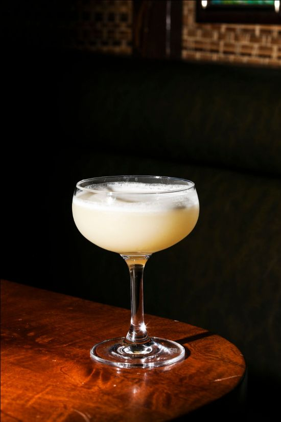
This past winter, the Lost Lake family was very fortunate to participate in a mezcal tasting to expand the options on our back bar for guests (and staff) that were fans of this particular agave spirit. One of the names that received the most votes of the staff to claim a coveted spot on our spirit’s list was that of Alipus. Alipus began in 1999 as a side project of Distileria Los Danzantes in San Juan del Rio. Today, it is a flourishing artisanal program led by numerous mezcaleros all over Oaxaca, along with Craft Distillers to help push their wonderful product into other markets, which began in 2012.
Alipus has several mezcals to choose from, but our choice would be Alipus: San Andres Ensamble headed by Don Valente Angel and Don Atanasio Aragon Martinez. Be careful, there are two San Andres’s bottles. One is made with 100% Espadin, while the Ensamble is made with Espadin and Bicuishe. The Ensamble has just the right amount of smoke, but leaves room for pepper and, perhaps, some buttered pecans on the palate. On the nose you’ll find some vanilla, dry stone, and some good old fashioned tropical fruit (you can see why the Lost Lakers chose it). San Andres clocks in at 44% ABV, is made with Espadin (80%) and Bicuishe (20%).
For fun, try the Ensamble side by side with the San Andres 100% Espadin to smell and taste the differences! You’ll find that the 100% Espadin has much more minerality to its finish. If you’d like to read up more on Mezcal, I would suggest picking Emma Janzen’s Mezcal: The History, Craft & Cocktails of the World’s Ultimate Artisanal Spirit for a great read on a great spirit!
An often overlooked classic mezcal cocktail is the Jusho! Though not as old as many classics, the Jusho as all of the makings of a delicious mezcal gimlet.
Jusho
2 oz mezcal
1 oz lime
.75 oz honey syrup
Add all ingredients into a shaker tin, hard shake for ten seconds, and double strain into a coupe or your favorite martini glass.
REQUEST LINE: WORLD'S BEST CUP OF COFFEE
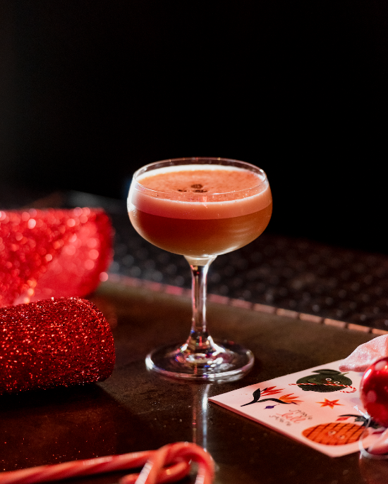
More like World's Best COUPE of Coffee, amiright?! This call on the request line is from our 2018 Jingle Bell Square menu, and the name comes from Elf (duh). Do you have any coffee demerara syrup left from newsletter one? Let's put it to use!
World's Best Cup of Coffee
1 oz Pierre Ferrand 1840 Cognac
.5 oz Coruba Rum
.5 oz Smith & Cross Overproof Jamaican Rum
.25 oz Averna
.25 oz cold brew
.25 oz coffee demerara
.25 oz orgeat (Small Hand Foods from Binny's!)
2 dashes Fee Walnut Bitters
1 whole egg
Combine everything in a cocktail shaker without ice, and shake the living bejesus out of it. You want this egg to puff up so big and fluffy before you add ice and shake it again (remember: too cold to hold!) Strain into — you guessed it — a cocktail coupe! Garnish with a little freshly grated coffee bean.
LOST LAKE PET PARADE
It's the world's slowest pet parade, where you get to meet one Lost Lake pet per newsletter — and we guess what they'd drink if they were human beings.
Likes chasing tennis balls but never returning them, road trips (has been to the west coast twice), naps, walks and belly rubs.
Her favorite drink now is a shot of coconut cream so we’d guess her favorite drink would be a piña colada while on a beach, enjoying the sun and the view.
Today, Hannah helps you curate your rum/rhum/ron selection, geology major Desira tells us about Martinique mud slides (spoiler: you can't drink them), Laura gives us a Jaguar Queen that needs coloring, and we answer two calls on the request line: Bahama Mama and Coconaut!
On Thursday, we'll have a cute vid from Alicia, an extra special delicious recipe and playlist from Fred in honor of Songkran (Thai New Year!) — and maybe another crossword if my baby keeps taking long naps. As always, the request line is open!
Thank you for your on-going support!! You're keeping our team spirit high, for real, and we're anxiously awaiting the moment we can be behind the bar together again.
love,
Shelby
HANNAH'S FOUR-BOTTLE RUM BAR
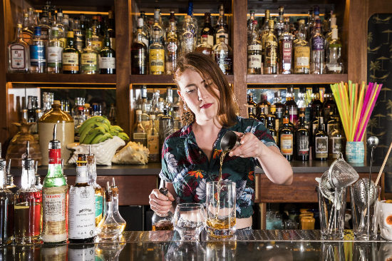
Heyyyyy party people! Glad to see you’re still sticking with us in these newsletters :). We’ve received a couple requests for a “curated rum list” — a handful of must-haves for the home bar. You could ask this question to all 10 Lost Lake bartenders and you would likely get 10 different answers. But those that know me know that I always have an opinion, so here’s my humble list!
First, everyone should have a solid unaged rum. This is often used in light, bright cocktails: daiquiris, mojitos, coco-frappes (shout out to Alan in last week’s newsletter!), etc. El Dorado 3 Year might be as easy-going as it gets: delicate and delicious. If you prefer something with a little more punch, try Royal Standard Dry White Rum (a blend of rums from Trinidad, Barbados and Jamaica) or Probitas from the Foursquare distillery in Barbados.
Next is a go-to with some age. I really like Real McCoy 5 Year for its approachability. Almost bourbon-like in taste, it works in a tropical cocktail and flourishes in a “brown and stirred.” It’s also a great gateway rum for your whiskey drinking friends! El Dorado 5 Year is perfect for those that like some richness in a rum and goes beautifully with tropical fruits. If you’re open to a little more funk, I highly recommend Plantation Xaymaca. This is a tried and true Lost Lake staple — so much so that we use it in our namesake cocktail. (My love for this spirit was cemented pool-side on our recent trip to Jamaica!)
It wouldn’t really be a complete LL list without mentioning some agricole. Agricole rhum, for those that don’t know, is a style of rum under French designation that’s made from fresh-pressed sugar cane juice instead of molasses. The flavor profile of an agricole is bright, grassy, and often a little salty. While this zing might be a bit intense for newer rum drinkers, it’s an acquired taste I’ve come to love. It’s also really fun to layer in cocktails to add depth — much like a cook would add acid to a dish. Two personal favorites: Neisson Blanc (ideal for daiquiris, tropical cocktails, and a classic Ti' Punch) and Neisson Elevé Sous Bois (aged for 18 months in French oak vats; great on its own, layered in spirit-forward cocktails, or in a Punch Vieux).
And last but not least, I would be remiss if I didn’t include Plantation Stiggin’s Fancy Pineapple Rum. It’s one of my favorites, plain and simple! Perfect in a daiquiri, perfect in an old fashioned, perfect over ice - there’s not much this little bottle can’t do.
DESIRA'S BRIEF HISTORY OF VOLCANOLOGY ON MARTINIQUE
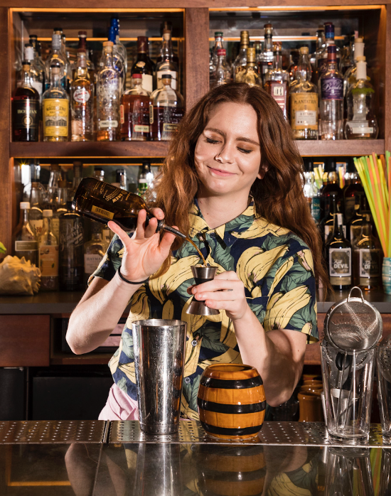
Martinique. Have you heard of it? It’s a beautiful island south east of Puerto Rico and north east of South America. Rum from Martinique is one of my favorite styles of rum. I don’t want to speak for everyone, but it’s also probably the overall staff favorite. This style of rum is distilled with fresh pressed sugar cane juice (as opposed to cane syrup or molasses) and under strict regulations of the French AOC. Rums from Martinique are distinctly grassy and earthy. I have a distinct memory of learning all this at rum class and someone mentioning Martinique having had a devastating volcanic eruption that killed all but 1 person (which isn’t true, many people survived). I also remember Clement and/or Rhum JM touting growing their sugar cane on volcanic soil. Volcanic soil is all the rage in spirits and wine. I think that’s partly because it's mysterious, born out of a fiery eruption from the underworld — and partly because it’s porous and allows for good drainage as well as a high mineral content, which allegedly yields pleasant yet distinct characteristics such as minerality. But I don’t know much about that.
Martinique is part of the Lesser Antilles Volcanic Arc. The arc is formed from the North American Plate subducting beneath the Caribbean Plate. Plate subduction essentially provides the material (magma) for volcanoes. Mount Pelèe is a stratovolcano and is located on the northern part of the island. A stratovolcano exhibits a few hazardous volcanic features: pyroclastic flows and thick viscous lava. Pyroclastic flows are hot gas and volcanic matter that travel anywhere between 60 and 430 miles per hour away from the volcanic vent upon eruption. Unfortunately, scientists didn’t have a great understanding of volcanos around the 1900s, and at that time believed that Mount Pelèe was extinct. This is in part why the eruption was so destructive.
In April of 1902 Mount Pelèe showed subtle signs of an impending eruption: sulfurous scents wafting in the air and a couple of small tremors that shook the neighboring town of St. Pierre. A few days later the summit spewed fire and other volcanic material. The next day locals noticed dead birds encrusted in ash and fish were belly up in the ocean. A few days later, a lahar (volcanic mud slide) broke through the crater of Mount Pelèe and a thick slurry of hot volcanic mud rushed down the Rivière Blanche at a 100 miles an hour, killing dozens of people and destroying a sugar mill. The mudslide continued until it hit the ocean; a tsunami of boiling mud that inundated St. Pierre.
All these events disturbed the flora and fauna that lived on the volcano as well. Gigantic centipedes and deadly 2-meter long pit vipers found their way into the streets of St. Pierre, killing around 50 people and even more livestock. On May 6th, the volcano sputtered blue flames and a lava dome poked out of the crater. Locals had been anxious about an impending eruption for days. Despite all the signs, the governor and his appointed commission members assured the public there was no danger. On May 8th, Mount Pelèe erupted in a fiery blast of pyroclastic flows that immediately annihilated the town of St. Pierre and resulted in a death toll of nearly 30,000 people. It was the deadliest volcanic disaster of the 20th century and the 3rd deadliest in recorded history.
The devastating amount of destruction was in part because of the fact scientists had only a rudimentary understanding of volcanos at the time, and didn't recognize the signs that should have required an immediate evacuation. The eruption of Mount Pelèe was the first of its kind in recorded history and thus marked the beginning modern volcanology, as well as the analysis and definition of the deadly pyroclastic flows. It continues to be one of the most monitored volcanoes in the world.
And now, let's make the national drink of Martinique! On the island, Ti Punch is served DIY-style, or chacun prepare sa propre mort (“each prepares his own death”). A bottle of agricole, a bowl of limes, a jar of sugar, and a glass — no ice! We like some ice to tame the agricole a bit, so here's how we make Ti' Punch at Lost Lake:
Cut a quarter-size disk of lime, making sure to include a small amount of flesh. Squeeze the lime disk over an old-fashioned glass and drop it into the glass. Add the cane syrup and, using a barspoon, press against the lime to release its oils and integrate them with the syrup. Add a large ice cube and pour in the rum. Give it a quick stir to dilute and cool down.
REQUEST LINE: BAHAMA MAMA
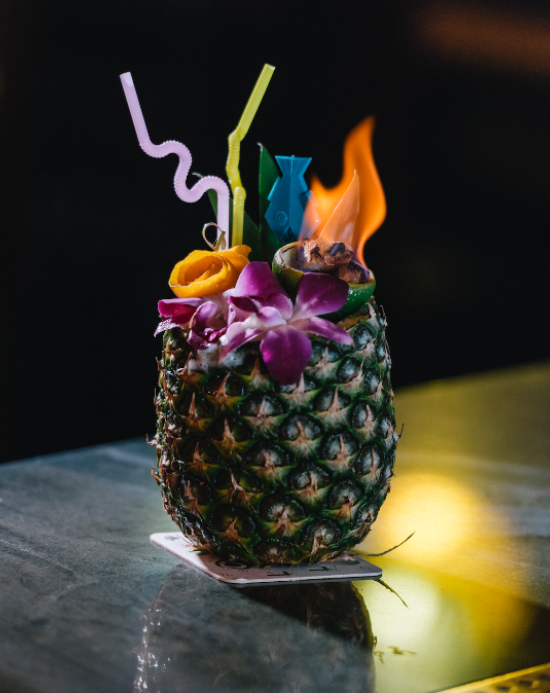
This is one of those cocktails that Lost Lakers love to make for off-menu requests — and I'm always perplexed by that, because it's such a dumb drink, right? But then I'll have a sip and be quickly reminded that even a (supposedly) silly pool drink like the Bahama Mama can be really complex and gorgeous when crafted with a little tender loving care. So I guess I shouldn't be so surprised that we've received more than one call on the request line for this lady!
Bahama Mama
1 oz Plantation 3 Star (unaged rum)
1 oz Coruba (aged Jamaican rum)
1 oz fresh pineapple juice (if you can't do fresh, Trader Joe's is next best!)
0.5 oz pomegranate grenadine (a simple syrup with pomegranate juice instead of water)
0.25 oz Pierre Ferrand Dry Curaçao
0.25 oz Giffard Crème de Banane
Combine all ingredients in a cocktail shaker with one cup crushed ice. (You can just bust up a bunch of freezer ice with a rolling pin!) Give it a good shake for about 5 seconds, then pour the entire contents into your cutest glass (we call that a 'dirty dump' lol). Top with more crushed ice, and garnish with tropical things!
"We get a lot of people in Lost Lake who love coconut-forward drinks. They'll start off with a Bunny's Banana Daiquiri and a Tic-Tac-Taxi, maybe move on to a coco-frappé or a Painkiller — but when their eyes still say NEED. MORE. COCONUT., I pull out the heavy hittin' Coconaut. It's equal parts Jamaican rum and our house made coconut liqueur, with a splash of lime. We serve ours in a glossy ceramic coconut, but you can gloss your own coconut at home with this delicious neo-classic from the Beachbum himself."
Coconaut
2 oz Plantation Xamayca (funky aged Jamaican rum)
2 oz coconut cream
1 oz fresh lime juice
Combine all ingredients in a cocktail shaker with one cup crushed ice. (You can just bust up a bunch of freezer ice with a rolling pin!) Give it a good shake for about 5 seconds, then pour the entire contents into your cutest glass (we call that a 'dirty dump' lol). Top with more crushed ice, and garnish with tropical things!
LAURA SAYS HEY THERE ALL YOU COOL CATS AND KITTENS
This is Atlas, canine roomie of Louise! He’s a grumpy 11 year old man who has a bad habit of snoring, but provides great snuggles. If he were a human he’d probably be a Rusty Nail-drinker.
Hello and welcome to the ninth edition of the newsletter!
It's Thursday, April 16th — the sad/weird one-month anniversary of the day we closed for service. But also a happy date: my sister-in-law Ashley's birthday! She founded an incredible organization called Chicago Period Project, and their work is now more important than ever. In honor of her birthday, and of all the orgs continuing their vital community work here in Chicago, consider syncin' your cycle with Chicago Period Project!
Okay, that's my promotional plug of the day. Let's get on with the good stuff: Fred celebrates Songkran with some DELICIOUS laab and a terrific playlist, Alex muses on the different types of bitterness this time has brought, Alicia makes two cocktails, and we answer a very personal call on the request line!
Until next week!
love,
Shelby
HAPPY 2563! FRED HELPS US CELEBRATE SONGKRAN
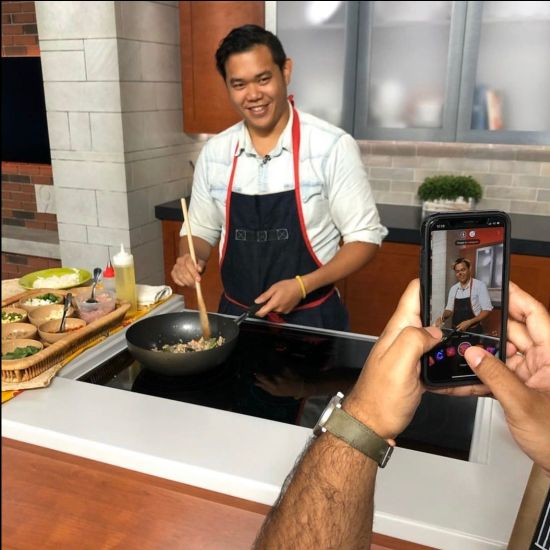
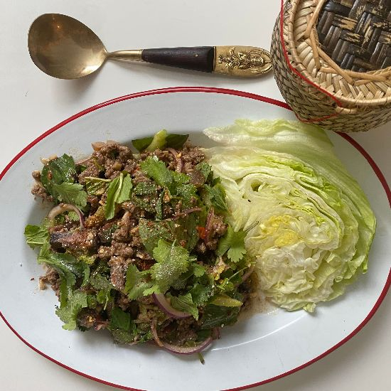
Songkran — also known as the Thai New Year — is April 13th, but is typically celebrated April 13th-15th to allow time for people to travel back home and celebrate with loved ones. The word comes from Sanskrit and translates to an “astrological passage.” It is borrowed from "Makar Sankranti," the Hindu harvest festival celebrating the arrival of spring in India during January. In modern times, Thais celebrate Songkran through a couple of different festivals. One of the main ones is a water festival which represents the washing away of one's bad luck and misfortunes. Songkran is also a festival of unity for all people to come together and pay reverence to those who have made sacrifices, ancestors, and loved ones who have passed. It is now year 2563!
As a former East Asian Anthropology major, I still find myself tracking down why certain dishes came to be. One of the coolest discoveries I love to share is about Laap (aka larb), the bright, herbal and spicy minced meat "salad" a lot of us have come to love. It is often eaten during Songkran as well! According to York University Department of Anthropology and Stanford Linguistics professor Dan Jurafsky, Marco Polo had written extensively about his 24 years of travels throughout Asia and, in 1298 while he was sitting in captivity after returning home to Venice, unknowingly documented laap. His account stated that he was in Southern China, Yunnan, or Nanzhao — the borders were loosely established depending on the year and who you asked. It is likely he was in or near the outskirts of what was part of Burma or the Khmer Empire, and is now part of Thailand/Laos.
Polo wrote: For the poor men go to the butchery and take and buy the raw liver as soon as it is drawn out of the animal and chop it small. And then he puts it in salt and in garlic sauce made with hot water and spices and eats it immediately. Since chilies were not introduced into this area at this point in time, it is likely that indigenous spicy herbs, roots, alliums (both raw and cooked), peppercorns, and dried spices were used from spice trades to make this dish. If you Google image search "Thai larb lu," you can find a very close depiction of that dish, which is an herbal Northern Thai dish of minced meat, offal, and blood.
History lesson: The Republic of Venice and the Republic of Genoa had a series of wars over the dominance of the Mediterranean Sea between 1256-1381 which ended up being inconclusive. These wars were directly correlated to the Silk Road trade routes which Marco Polo's merchant father was a part of. There were four significant wars total with decades of peace in between each war. In 1295, Marco Polo had returned to his home in Venice and right into the second Venetian-Genoese war — the War of Curzola, 1295-1299 — which did not have much significance, but had the most casualties. Needless to say, Venice lost to Genoa, hence Marco Polo's imprisonment.
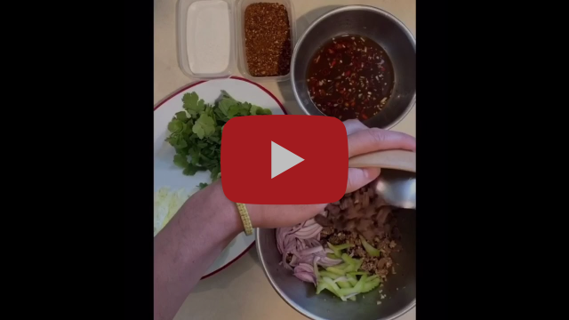
As Songkran comes to an end, and as I pay reverence to my ancestors and those who share my culture, I have written a recipe that is based on the first documented version of Laap (minus the blood part.) It is a thoroughly indigenous dish — hyper-regional, seasonal, and a huge staple in many Southeast Asian cuisines. There are so many different renditions and variations of this recipe, and because these are quarantine times, I used what I had in my pantry to put this together.
Laap (2-4 servings)
1 lbs lean ground beef (lean chicken, pork, or lamb works well too)
1/2 cup beef or chicken broth (water works too)
3 cloves garlic, minced
1 Tbs fish sauce
1 tsp chili flakes
1/2 tsp ground cumin(use more cumin if using lamb)
1/2 tsp ground coriander
1/2 tsp ground white pepper
1/2 tsp ground black pepper
1/2 tsp salt
For the dressing
zest from one lime
1/4 cup lime juice
1/4 cup Tbs white or rice wine vinegar
1/4 cup fish sauce (I prefer Squid brand or MegaChef brand if you can find it)
1 Tbs sugar(I used honey and brown sugar for a more nuanced sweetness)
5 cloves of garlic, minced
1-10 Thai chilies(you decide how spicy you want it), minced
pinch of Thai chili flake(optional)
-whisk all of this together until sugar is fully dissolved, taste and adjust to your liking. Refrigerate until you need it.
For the salad
3-5 sprigs of mint(10-15 leaves), torn
5 sprigs of cilantro with the stem on, chopped
1/4 of red onion, thinly sliced
Greens(I like to use whatever lettuce I have and some roughly chopped green cabbage)
1 Tbs Toasted jasmine rice powder
Large pinch of Fried shallots
-Start the Songkran playlist!
-In a large saute pan heated over medium heat, add a Tbs of neutral oil and your ground meat. Use a spatula or wooden spoon to break up any large clumps of meat. Cook for 2-3 minutes, should still be fairly undercooked.
-Add all the spices, garlic and seasonings. continue to cook for one minute. You are not looking to get much browning on the meat, just cooking it more and breaking up clumps.
-Add your fish sauce and broth or water. Turn the heat up to high and continue to cook until the liquid is almost evaporated. The meat should be fully cooked at this point. Turn off the heat and transfer to a large mixing bowl. Let cool for 5 minutes.
-Add 1/2 cup of the dressing to the meat and stir in. Taste it for seasoning, add more if you'd like.
-Stir in the mint, cilantro, onion, and cabbage; transfer to a serving plate or bowl and garnish with fried shallots and rice powder. Eat with steamed rice, sticky rice or lettuce cups!
Pro tip: if you have leftover grilled or roasted meats you want to use up, make extra dressing and toss it together with the salad portion.
Click to play: Alicia and Moll make the world's cutest stop-motion cocktail video — plus a recipe that will leave your tongue lollin'!
REQUEST LINE: ALEX IS BITTER
The time given to me by being in quarantine has led to many hours of introspection and self-reflection. Only recently, though, have I begun to write my thoughts down. As of right now, my thoughts on the world (the one we left behind and the one we may step into post-quarantine), politics, and the hospitality industry (what it was and what it could be) have all been a bit bitter, if I am being honest. Much like the flattening of the curve, though, I do see outliers: little pieces of positivity and future productiveness that pepper the bitter portions of my paragraphs. And perhaps those words will one day find a home on our lovely Lost Lake newsletter. But today I wanted to share something bitter that many of our readers might like a tad better than my musings, and that is a couple of cocktails using a staple stay-at-home-bartender ingredient: Campari.
This first cocktail is named Ruby Mae’s Second Surfing Bird. You can find this delicious gem on Lost Lake’s Whisper Menu. Is there a Rube Mae’s (first) Surfing Bird? Yes, there is. Is that cocktail a riff on a classic Jungle Bird? Yes, it is. So, safe to say the second bird is a riff on a riff — equally tropical and flavorful. This cocktail can be buzzed, blended, or shaken to work with however you’re able to make cocktails at home. This one is also a little sizeable, so feel free to share with your quarantine buddy!
Ruby Mae’s Second Surfing Bird
1.75 oz reposado tequila
.75 oz mezcal
.75 oz Campari
.75 oz ruby port
1.5 oz pineapple juice
1 oz lime
.75 oz passionfruit syrup (we like Small Hand Foods from Binny's!)
.5 oz simple syrup
Combine all of these ingredients into a shaker tin, buzz for three seconds with one cup of crushed ice, and pour over fresh ice into your favorite tropical mug!
The next drink on our crushable Campari cocktail compendium (this is more of a booze-forward sipper, actually) is the Kingston Negroni. Much like its predecessor, the Kingston Negroni utilizes only three ingredients for this cocktail: rum, Campari, and sweet vermouth. Lost Lake being Lost Lake, though, we use two Jamaican rums in this cocktail that play very well with the other two ingredients, making this cocktail way more than the sum of its parts.
Kingston Negroni
1.5 oz Appleton Signature Blend (aged Jamaican rum)
.5 oz Smith and Cross (funky overproof Jamaican rum)
.75 oz Cocchi di Torino sweet vermouth
.75 oz Campari
Combine all of these ingredients into a mixing glass. Fill the mixing glass near half way with Kold Draft ice, and stir for ten seconds. Strain your cocktail into a tumbler or rocks glass over one large cube of ice or a few fresh cubes. Express a bit of orange peel over the top and have at it!
REQUEST LINE: RUM RIVER MYSTIC
This drink is a really special one and has been in rotation for a while — predating Lost Lake, even! Rum River Mystic takes its name from the beloved greyhound of Lost Lake BFF (and investor!), Molly Marcucci. Upon his rescue by Greyhounds Only, Rum River Mystic was renamed Mr. Marmol — but his racing name lives on with this delicious stirred cocktail.
Now, this is definitely a recipe with some esoteric ingredients. But! When I find a recipe I love, I go the distance with it — and this is definitely one of those builds, which I think makes investing in some not oft-used bottles pretty worth it. You can batch it up and keep it bottled in your fridge, too — just wait to add the bitters until you're ready to enjoy!
Molly herself is more of a daiquiri frappé girl, but she's been known to (pretend) to sip one of these every now and then. Cheers to Mr. Marmol and his human soulmate Molly! Molly, next time I name a cocktail after something special of yours, I promise it will be a drink you love.
Rum River Mystic
1 oz Don Pancho 8 (aged Panamanian rum)
1 oz Rittenhouse Rye
.75 oz Byrrh Quinquina
.25 oz Benedictine
2 dash Angostura Bitters
4 drops Bittermen's Elemakule Bitters
Combine all ingredients except Elemakule Bitters in a mixing glass, add cubed ice and stir for 10 seconds. Keep the back of your spoon against the wall of the glass and try to just "spin" the drink — your aim is to chill and dilute, not agitate or aerate. Strain into a rocks glass over a big ice cube, and add 4 drops of Elemakule Bitters to the top of the ice cube. If you can, make fresh ice the night before! The fresher the ice, less time it has to absorb your weird freezer aromas.
LOST LAKE PET PARADE
Hannah's purr-baby Sancho Panza!
3yrs old (ish)
Favorite pastimes:
- sprinting back and forth in the house
- destroying blinds and screens
- tucking his face under his paw when he sleeps
- meowing at the door like he wants to go outside but then chickening out and backing away when the door opens
His cocktail? Probably a vodka soda. Three limes. Grey goose. (Cause it’s a bird.)
Hello, and welcome to the tenth (TENTH!) edition of the newsletter! Can you believe it? I sure didn’t think we’d still be all-the-way-closed closed, writing newsletters in the middle of April. You know what feels like a million miles away from here? Busy bars.
You guys, we miss work! Even the stuff we used to complain about, like being totally slammed on the weekends. It's making us pine for weird moments... For example: that special feeling that comes with being totally weeded in the service bar on a Saturday night and then seeing a ticket come up for all shaken and stirred drinks (aka, drinks with no garnish). They’re usually just three or four ingredients, giving you a break from the avalanche of tickets stacked with eight-touch cocktails.
So, let us share that feeling with you! Yes, this is a long ass service ticket — but look at those builds! It’s a favorite three ingredient cocktail from each of the nine Lost Lake bartenders. This is the order you’ve been looking forward to since twelve Fogcutters ago.
love,
Shelby
ALAN
Gimlet! They're delicious and their flavor is heavily influenced by the type of gin you pick. I feel like the gimlet has a huge range — you can go for something lighter and more floral to something super-dry and almost bitter, and also like everywhere in between. I love Hayman's Old Tom Gin.
Gimlet
2 oz Hayman's Old Tom Gin
.75 oz fresh lime juice
.5 oz simple syrup
Add all ingredients to a cocktail shaker along with half of the spent lime hull and ice cubes. Shake it as hard as you can for ten seconds (your mantra: too cold to hold!) Strain into a chilled cocktail glass. Bonus points if you have a fine mesh strainer to "double strain" through — capturing those little ice chips before they end up floating in your cocktail will save it from further dilution as you sip.
ALEX
Queen’s Park Swizzle! 1. You get to show off that lele* skill; 2. Mint is still an underrated garnish/ingredient; 3. Delicious cocktail with an 'Ango Halo'.
*Bois Lele: those wooden swizzle sticks we use at Lost Lake. You can order one here!
Queen's Park Swizzle
1.5 oz El Dorado 5 Year Rum
.75 oz lime
.75 oz simple syrup
*Lightly press six mint leaves and drop into glass. Add all ingredients, then a cup of crushed ice. Using your , swizzle that drink!
How to Swizzle: Jiggle your swizzling tool (bois lele, bar spoon, milk frother, kabob stick, etc) down into the ice where all the liquid ingredients are. Hold the swizzle stick between your palms and quickly rotate the stick by rubbing your palms together. As you rotate, move the stick up and down, so the ingredients and ice become incorporated, and a nice layer of frost begins to form on the outside of the glass. This chills, aerates, and properly dilutes the drink. Remove the swizzle, top with more crushed ice and pack it down with your cupped palm.
To garnish with an Ango Halo: Dash Angostura Bitters on the top of the packed crushed ice so that just the top half inch of ice is red.
Finish with a big bouquet of spanked mint. Place your straw right in the middle of that mint and take a big sniff with every sip!*
ALICIA
Daiquiri! A refreshing drink that is easy and versatile. Change the rum, change the drinks flavor profile — though, I'll usually land on a white rum. El Dorado 3 Year if I'm looking for something more tropical, Probitas if I'm vibing something more dry, and Neisson 100 if I'm wanting something more vegetal.
Daiquiri
2 oz El Dorado 3 Year
1 oz fresh lime juice
.75 oz Dubois Petite Cane Syrup (or a rich simple syrup, 2:1 sugar:water)
Add all ingredients to a cocktail shaker along with half of the spent lime hull and ice cubes. Shake it as hard as you can for ten seconds (your mantra: too cold to hold!) Strain into a chilled cocktail glass. Bonus points if you have a fine mesh strainer to "double strain" through — capturing those little ice chips before they end up floating in your cocktail will save it from further dilution as you sip.
ANDY
Topo-Ti Punch! I love it because it truly makes me feel like I’m drinking. There aren’t too many spiritfree cocktails that you can sip and enjoy over a nice big rock.
Topo-Ti Punch
3 oz Topo Chico (chilled)
barspoon Dubois Petite Cane Syrup (or a rich simple syrup, 2:1 sugar:water)
lime coin
Vince’s Pro Tip: a pinch of salt
Cut a quarter-size disk of lime, making sure to include a small amount of flesh. Squeeze the lime disk over an old-fashioned glass and drop it into the glass. Add the cane syrup and, using a barspoon, press against the lime to release its oils and integrate them with the syrup. Add a large ice cube, pinch of salt (if using), and pour in the Topo Chico. Give it a quick stir to dilute and cool down.
DESIRA
Fino-Agricole Daiquiri! I found that bartenders that don’t usually like cocktails are partial to a fino/rhum daiquiri — Desira’s no exception!
Fino-Agricole Daiquiri
1 oz fino sherry (or manzanilla!)
1 oz Clement Premiere Canne Rhum Agricole
.75 oz fresh lime juice
.5 oz Dubois Petite Cane Syrup (or a rich simple syrup, 2:1 sugar:water)
Add all ingredients to a cocktail shaker along with half of the spent lime hull and ice cubes. Shake it as hard as you can for ten seconds (your mantra: too cold to hold!) Strain into a chilled cocktail glass. Bonus points if you have a fine mesh strainer to "double strain" through — capturing those little ice chips before they end up floating in your cocktail will save it from further dilution as you sip.
HANNAH
Negroni Sbagliato! It’s the perfect balance of bitter and bright — with some bubbles to boot! I like it best with Cocchi di Torino sweet vermouth, or a total divergence from the classic with Alessio Bianco.
Negroni Sbagliato
1.5 oz Cocchi di Torino Sweet Vermouth
.5 oz Campari
sparkling wine
Build this cocktail in a wine glass! Add vermouth and Campari, fill glass 3/4 with ice. Top with sparkling wine and give a little stir. Garnish with a looooooong orange peel (my grandma calls them horse's necks!) expressed, and then rolled into a rosette and nestled in the ice.
LOUISE
Martini! I’ve been drinking a lot of martinis in quarantine. Much like Alicia and her Manhattan, the martini was the first cocktail I had that made me realize cocktails are important. The martini is also where my love for vermouth began. When making a martini I keep it clean and simple and make sure that my vermouth is quality and fresh. Always always refrigerate vermouth after opening it!
Louise's Martini
2 oz gin (I prefer a London dry gin like Plymouth)
.75 oz dry vermouth ( I’m partial to Yzaguirre extra dry or Bordiga extra dry)
Stir over cracked ice for about ten seconds. I like to place one finger on my mixing glass and when the ice just starts to create condensation, I know there is the correct dilution. If you are using a navy strength gin, you may want to stir longer. Strain into a chilled glass. I like to garnish with a lemon twist and a castelvetrano olive. If I’m really trying to dress it up, I’ll put a dot of olive oil on the top.
SHANNON
Toronto! It's a recent favorite of mine that we’ve had on our #Shiftease menus recently. A brown-and-stirred, the combination of rye or Canadian whiskey with Fernet and a little sugar is lovely and herbaceous.
Toronto
2.5 oz Rye Whiskey or Canadian Whiskey
.25 oz demerara syrup
Barspoon Fernet Branca
Combine all ingredients in a mixing glass, add cubed ice and stir for 10 seconds. Keep the back of your spoon against the wall of the glass and try to just "spin" the drink — your aim is to chill and dilute, not agitate or aerate. Strain into a chilled cocktail coupe.
VINCE
Remember the Alimony! I love Cynar and this is a great negroni riff.
Remember the Alimony
1 oz London dry gin
1 oz fino sherry
1 oz Cynar
Combine all ingredients except Elemakule Bitters in a mixing glass, add cubed ice and stir for 10 seconds. Keep the back of your spoon against the wall of the glass and try to just "spin" the drink — your aim is to chill and dilute, not agitate or aerate. Strain into a chilled cocktail coupe.
Hello to all y'all and welcome to the eleventh edition of the newsletter!
Today, Thursday, April 23rd, we're going to swing that pendulum about as far as we can from Tuesday's easy three-ingredient cocktails! You guys sick of making banana bread? Let's do a little at-home-sous-vide with all those overripe bananas on the counter you've been trying to ignore. We'll also make some orgeat, answer a call on the request line, and meet another Lost Lake pet —plus make her favorite bourbon cocktail!
We really, really appreciate all the kind notes and Instagram tags of your at-home-bartending adventures! Keep 'em coming — and don't forget you can dial up the request line by replying to this email.
Happy weekend!!
love,
Shelby
PAUL ANSWERS THE QUESTION: WHO INVENTED THE BANANA BOULEVARDIER?
The Lost Lake version of the Banana Boulevardier (named 'Who Invented the Banana Boulevardier?') is inspired by both Terry Williams's version served at one of my favorite bars, Anvil Bar and Refuge in Houston (shout out to my hometown!), and Austin Hennelly's version served at Majordomo in Los Angeles. Terry started off by combining Campari and Giffard Banane de Brazil as a house shot that quickly turned into a delicious Boulevardier riff using bourbon, sweet vermouth, Campari, and the banana liqueur. Austin, taking what he learned at Booker and Dax in NYC, decided to infuse Japanese whiskey with cooked bananas and clarified the mixture using a centrifuge.
I decided to borrow a bit from both techniques in this version — it's a bit easier to prepare and is still so delicious. Of course, I had to add a bit of funky Jamaican rum to the mix, which further enhances the banana flavor and adds a bit of complexity.
Who Invented the Banana Boulevardier? (makes 3-4 servings)
4 oz Four Roses Single Barrel Bourbon
2 oz Velier Hampden 46 Jamaican Rum
3 oz Cocchi di Torino Sweet Vermouth
1.5 oz Tempus Fugit Creme de Banana
1 oz Campari
To infuse (using a sous vide wand, ya fancy home chefs):
Using a sealable bag and a vacuum bag sealer, seal the bottom of the bag (really make sure that bottom is sealed!)
Add Boulevardier batch and 1 ripe/overripe banana
Using the vacuum bag sealer, seal the top of the bag (again, make triple sure the top is sealed.)
Grab a pot and the Anova Sous Vide machine.
Fill the pot with hot water ¾ of the way to the top
Attach the Anova wand and set for 140 degrees and timer for 2 hours
Press start. When the temperature reaches 140 degrees, submerge the bag into the pot. When Timer goes off, remove the Anova wand, dump the hot water and fill with ice and cold water.
Place the sealed bag in the ice water for 5 minutes.
Cut the top corner of the bag and strain into a bottle or decanter and place in refrigerator.
Don't have a sous vide at home? (lol) Here's how to infuse using a modified technique:
Add Boulevardier batch and one really ripe banana to a large ziplock bag and seal — squeezing out as much air as possible.
Fill the pot with hot water ¾ of the way to the top and bring to 140 degrees. Submerge the bag until all of the batch is in the hot water and use a clothes pin to clip the top of the bag to the side of the pot.
Simmer for 2 hours
When timer goes off, remove the bag, dump the hot water and fill the pot with ice and water.
Place the sealed bag in the ice water for 5 minutes.
Unlock the top corner of the bag and strain into a bottle or decanter and place in refrigerator.
To serve:
Pour 4 oz of batch into a mixing glass with ice and stir for 5 seconds. Strain over a big rock in an old fashioned glass. Garnish with expressions from lemon and orange peels, discard the peels.
LET'S MAKE ORGEAT!
Many of the recipes we've shared in our lil newsletter here have featured orgeat. It's fatty, nutty, floral, delightfully sweet — what more could you ask for in a syrup?
It's true that our favorite brand of shelf-stable, store-bought orgeat to recommend is from Small Hand Foods. (If you snag a bottle of anything Jennifer Colliau is making, you're in for a treat!) But when it comes to making your own orgeat, there are a few schools of thought.
At Lost Lake — when it comes to all of our house-made syrups —we usually keep things pretty simple, letting each ingredient really shine. For our orgeat, we forgo commonly used additions like orange flower or rose water, and opt instead to look for floral notes in fancy expensive Italian Pizzuta almonds, instead.
Another reason why orgeat is so wonderful: you can make so many different kinds! Our current menu features three: almond, pistachio, and macadamia. Bascially, just...go nuts! (Sorry.)
Lost Lake Orgeat
You'll need:
1 pound of raw almonds (skinless is preferred, but it's also okay if not!)
white sugar
cheesecloth or nut milk bag
Soak the almonds in water for 24 hours, using just enough water to cover the nuts — and making sure not to soak longer than 24 hours. Strain the water from the soaked nuts and add equal amount of fresh water by weight to the weight of the soaked almonds. Pour into nuts and fresh water into a blender and blend until smooth. Press blended mixture through a nut bag or cheesecloth to get your almond milk!
Add almond milk and an equal amount of sugar by volume to a pot over medium heat. Stir until all sugar crystals have dissolved. Cool before using. That's it! So simple — but everything depends on the quality of those almonds (or other nut). This orgeat will keep in your fridge for two weeks.
Don't Touch My Bikini is a really wonderful and deceptively simple cocktail — but the whole thing hinges on the spirit: malty, earthy, Dutch 'gin' called genever. (If you're curious, you can find more than you probably ever wanted to know about the spirit here.)
The name comes from the Halo Bender's song of the same name — and if you listen closely you'll probably hear other cocktail names on that album. What can I say, I love to borrow Halo Benders lyrics ¯_(ツ)_/¯
But the best thing about this cocktail is that she has a spiritfree sibling, developed by Lost Lake's former 'mocktologist' (and MY sibling) John Allison! Remember him? He's the best. John's a UPS driver now — send him some virus-repelling vibes while you enjoy his no tipple sipper!
Don't Touch My Bikini
1.5 oz genever gin
.75 oz fresh lime juice
.75 oz coconut cream
0.5 oz cane syrup or rich simple syrup
five drops Bittermens Hellfire Shrub
Angostura Bitters halo
mint bouquet
*Add all ingredients (except Angostura Bitters and mint) right into your drinking vessel along with one cup of crushed ice. Using your swizzle tool, swizzle that drink!
How to Swizzle: Jiggle your swizzling tool (bois lele, bar spoon, milk frother, kabob stick, etc) down into the ice where all the liquid ingredients are. Hold the swizzle stick between your palms and quickly rotate the stick by rubbing your palms together. As you rotate, move the stick up and down, so the ingredients and ice become incorporated, and a nice layer of frost begins to form on the outside of the glass. This chills, aerates, and properly dilutes the drink. Remove the swizzle, top with more crushed ice and pack it down with your cupped palm.
To garnish with an Ango Halo: Dash Angostura Bitters on the top of the packed crushed ice so that just the top half inch of ice is red.
Finish with a big bouquet of spanked mint. Place your straw right in the middle of that mint and take a big sniff with every sip!*
Don’t Touch My Car Keys
1.5 oz coconut syrup
0.75 oz lime
3 oz Topo Chico (chilled)
Halo of Fee Brothers Old Fashioned Aromatic Bitters
mint bouquet
Same preparation technique as Don't Touch My Bikini!
LOST LAKE PET PARADE
Meet Andy's dog Brella!
This is Umbrella Allison aka Brella aka Duddies Marie — her Pilsen name from my sister-in-law's mom, Yoli! (Brella comes from Rihanna, obviously.)
We think she is 10 years old. She was born totally deaf and is the laziest and most loving cuddle-buddy. When my brother John worked at Ravenswood Elementary a teacher brought baby Brella in to see if anyone would adopt her — the teach had dog-napped her from the next door neighbor who allegedly used pit bulls in dog fights.
I used to “dog-sit” Brella for days and weeks at a time when John and I lived down the hall from each other. When my sister-in-law Ashley was pregnant with their first baby, and I told them that Brella is now officially my daughter.
Brella has been living with me for almost 8 years, but officially mine for 6. She would most likely drink the Hazy Lazy, Like, Kinda Crazy because that fits her personality to a T. She is the laziest 'person' I have ever encountered — but she also has crazy spurts of energy where she'll drop her ass low and sprint from one end of the house to the other.
Combine all ingredients in a cocktail shaker with one cup crushed ice. (You can just bust up a bunch of freezer ice with a rolling pin!) Give it a good shake for about 5 seconds, then pour the entire contents into your cutest glass (we call that a 'dirty dump' lol). Top with more crushed ice, and garnish with tropical things! We like a cinnamon stick (snapped in half to release those good smells) on this one.
Today is Tuesday, April 28th — the last Tuesday of the month aka #SHIFTEASE! #Shiftease is a special night on our calendar because we wear Lost Lake t-shirts instead of full tropical regalia and listen to our favorite non-tropical tunes. (If I were working tonight I'd definitely pull rank and torture everyone by putting Fiona Apple's new album on repeat.)
In today's newsletter you'll learn about the origins of #shiftease and make one of our favorite shifty cocktails — plus Louise has a drink to keep your shaking muscles conditioned and Shannon answers a call on the request line.
See you Thursday!
Love,
Shelby
LOUISE'S SHAKE WEIGHT FIZZ
As a bartender, the call for a Ramos Gin Fizz can sometimes be a dreaded one — but now with unlimited free time and no tickets stacking up around me, I find myself craving a difficult build. I also have had haunted visions of my first night back behind the Lost Lake bar, crying because I’ve lost all of my shake muscles, my arms turned to noodles while I helplessly slosh a daiquiri. An egg white drink that can require up to twelve full minutes of shaking seems like the perfect way to stay in practice!
The original Ramos Gin Fizz was invented in 1888 in New Orleans at the Imperial Cabinet Saloon by Henry C. Ramos. The Ramos boasted a decadent mix of heavy cream, egg white, sugar, gin, citrus, and orange blossom water — plus a hefty dose of elbow grease to emulsify the mixture. This luxurious velvet concoction became wildly popular and to this day remains a classic of the cocktail canon.
After several sad gray rainy days, the sun finally came out yesterday and I thought it was the perfect time to play with Ramos variations to imbibe in my backyard. I came up with a fun little jammer that I am calling Louise's Shake Weight Fizz. Now get your biceps ready and let’s shake!
Louise's Shake Weight Fizz
2 oz Plantation Xaymaca (funky Jamaican rum)
1 oz Jarritos grapefruit soda
.75 oz lime
.75 oz ginger syrup
.5 oz heavy cream
1 egg white
1 dash angostura
Ground cinnamon for garnish
Pour soda into the base of a Collins or snifter glass. Combine all ingredients except cream and soda in a tin and add one ice cube. Now if you want a little extra help with fluffing up your egg white, remove the spring from a hawthorn strainer and drop that into the tin as well, the spring will act as a whisk while you shake and add that extra whip for the ultimate egg white foam. Tightly seal your tin and shake shake shake shake until the ice cube has disappeared and the mixture feels fluffy and aerated, like you’re shaking a large cotton ball. Then add cream and enough ice to fill the tin and shake hard (read: HARD!) for ten seconds. Double strain into your glass over the soda. Once the mixture reaches the rim of the glass, allow it to settle and release its major air bubbles. Once the cocktail has settled sloooowly pour the remainder of the tin directly into the center of your drink. I sometimes like to use a straw or bar spoon to poke a hole down to the base of my drink and then pour into that hole — this will make the head of the drink rise up like a beautiful cloud. Dust with cinnamon for garnish and enjoy!
SHANNON ANSWERS THE REQUEST LINE: HEAVEN IS A PLACE/THIS IS THE PLACE
Much like the Belinda Carlisle song where this cocktail got part of its name, Heaven is a Place/This is the Place is a well-beloved jam. Whether enjoying it alone or at full volume in a ceramic conch shell with friends, this gin-based banger carries a bright, decidedly tropical tune over a lovely helping of crushed ice. Honey, allspice dram and falernum work together to bring an earthy, tropically spiced note, while the lime juice and curaçao provide the zest. Though I’m not much of a gin drinker myself (thank you, New Years 2011), I absolutely love the herbaceous backbone of it in this cocktail, as it gracefully amplifies the nuttiness of the allspice dram, the floralness of the honey and curaçao, and the tartness of the lime.
Heaven is a Place/This is the Place
2 oz London dry gin
1 oz lime
0.5 oz Pierre Ferrand Dry Curacao
0.5 oz Velvet Falernum
0.5 oz honey syrup
0.25 oz St. Elizabeth Allspice Dram
3 dashes Angostura Bitters
Combine all ingredients in a cocktail shaker with one cup crushed ice. (You can just bust up a bunch of freezer ice with a rolling pin!) Give it a good shake for about 5 seconds, then pour the entire contents into your cutest glass (we call that a 'dirty dump' lol). Top with more crushed ice, and garnish with tropical things!
WHAT IS #SHIFTEASE?
Today is the last Tuesday of the month, which means it's time for #SHFITEASE at Lost Lake! We usually explain the inspiration behind #shiftease in a short little paragraph on the evening's menus — but now that we have the time, why don't I give you the full, ten minute version?
A couple years ago, I was asked to write a piece for the story telling series Between Bites. The theme was "From the Ashes," and I was lucky enough to read alongside the inimitable Chicago chef (and my pal!) John Manion. You can listen to our stories in podcast form right here, and my #SHIFTEASE story starts at 10:28.
In the spirit of #SHIFTEASE, your friends of Lost Lake ask you to consider making a contribution — donate money, raise awareness, commit to volunteer in the future, whatever works for you — to a local, grassroots organization fighting for gender, racial, or economic justice in Chicago (or wherever you live!)
One thing you might not know about Lost Lake is that we make one of the best margaritas in Chicago. We've got more limes than we know what to do with (jk we know what to do with them), a not-too-shabby selection of agave spirits, and a daiquiri build that transitions very easily to a most excellent margarita. The key to this recipe is in the technique: we shake the cocktail with the spent lime hull (this is how we catch you using those fake plastic limes for juice) to impart a magical amount of that bright, beautiful lime oil.
In honor of #SHIFTEASE, it is our pleasure to introduce you to your new favorite at-home shifty:
MARGARITA!
2 oz blanco tequila
1 oz fresh lime juice
.5 oz Pierre Ferrand Dry Curaçao
.5 oz rich simple syrup
Add all ingredients to a cocktail shaker with cubed ice and one half of the spent lime hull. Shake, shake, shake, repeating your now-familiar cocktail shaking mantra: Too cold to hold! When that frost has started to form on the outside of the shaker and you can hear the ice has begin to break up, dump the entire contents into your cutest margarita glass (salt the rim before if that's your jam!) and top with crushed ice. At Lost Lake, we call any cocktail that's been dirty dumped and topped with crushed ice "Party Boy Style."
Thank you for tuning in to another episode of The Newsletter! Today, we get to visit with Alicia as she makes us the fancy cocktail we didn't even know we needed (but definitely deserve), celebrate Vince's very cool new title, and make Glassquiris on AM radio!
See you again on Tuesday when it will be May! 🤯
Love,
Shelby
ALICIA MAKES AN OLD CUBAN
click me i'm a very cute video!
Because looking at a third calendar page of Life in Pajamas is tough on the ol' morale, Alicia is here to encourage us all to put on our nice soft pants (you know the ones) and pop the cork on some sparkling wine. Let's get fancy with an Old Cuban!
Video by Alicia's partner-in-quarantine, the very talented Moll Nye!
VINCE IS ONE OF PUNCH'S BARTENDERS IN RESIDENCE!
We are so proud of our own Vincent Bright, who was just selected as one of Punch's Bartenders in Residence! STAND UP AND CLAP!!! VINCE! VINCE! VIIIIINCE!!!
Usually, being named a Bartender in Residence by Punch involves traveling to New York and hosting a big cocktail party to show off your skills — but that was in the beforetimes. Punch has pivoted to meet the current reality, and now being a Bartender in Residence means staying in your residence and generating a $1000 donation to a cause of your choosing. Vince chose Support Staff's Comp Tab Relief Fund:
For his charity, Lost Lake bartender Vincent Bright selectedSupport Staff. Their community-basedComp Tab Relief Fundwas launched by an alliance of hospitality professionals to offer financial support to greater metropolitan Chicago hospitality workers affected by closures related to COVID-19. “There’s very little attention or assistance for the undocumented workers with whom we share this industry, and without whom this industry would not be able to function,” says Bright. “Support Staff is specifically extending financial assistance to those without existing support systems.” Bright, who grew up in a single-parent household on the South Side of Chicago, never forgets how hard his mother had to work every day to support her family. “My mom didn’t have access to the same resources I am able to tap, and I’m grateful to be able to raise awareness.”
Since we can't all crowd around the bar with Vince, let's make one of his recipes at home: Lowtide Lifesaver!
Lowtide Lifesaver
2 oz Seedlip Spice
.75 oz pomegranate grenadine
.5 oz mint tea syrup
1 oz lemon juice
Fever Tree Ginger Beer
Add all ingredients to a cocktail shaker except ginger beer. Shake with ice for five seconds, strain into a collins glass over fresh cubes of ice. Top with ginger beer.
Vince makes his mint tea syrup with Intelligentsia's Moroccan Mint Tea. He steeps 25g of tea in 2 cups of water for 10 minutes. Strain the tea leaves, then use the tea to make a 1:1 simple syrup with white sugar.
You can make pomegranate grenadine using pure pomegranate juice (we use POM Wonderful at Lost Lake) and sugar in a 1:1 mixture.
This cocktail is also great with an ounce of London Dry Gin, if you need a little tipple in your tropical cocktail!
GLASSQUIRIS ON THE RADIO
On Friday night, I called in to join one of my very favorite people on her radio show — and make her a birthday cocktail!
Ji is the most excellent party girl, and she deserves a most excellent birthday cocktail. One of my favorite drinks ever is one I had in Paris several years ago (remember traveling??) at the the wonderful Pigalle cocktail bar Glass. After one sip, I asked the bartender to repeat the ingredients because I thought for sure when he said "coconut oil" that something must have been lost in translation.
Back in Chicago, an attempted recreation of the recipe with straight up coconut oil confirmed that yes — it was the very same coconut oil you cook your veggies in and massage on your sunburn and rub into your split ends. It was so effective at fluffing up an already very fluffy pineapple drink that we put it in a dasher bottle and now coconut oil is a staple on the Lost Lake bar. We even tried different oils in different drinks, like Demi's Avocado Daiquiri!
Anyway, this deceptively simple and delightfully crushable recipe is perfect for my bday bud Ji. Plus, it's a versatile recipe that can accommodate tequila and vodka lovers, too!
Glassquiri (from Glass, Paris 2015)
2 oz light rum (we use Plantation 3 Star or El Dorado 3 Year), but you can also use an unflavored vodka or blanco tequila!
1 oz pineapple juice (Trader Joe’s makes the best store-bought version if you can’t juice your own)
.75 oz fresh lime juice
.75 oz simple syrup
barspoon coconut oil (skinny teaspoon)
Combine all ingredients in a cocktail shaker. Before you add ice, give it a little whisk or agitate it with a fork to emulsify the oil. Then add ice and shake that shit really, really, really hard — 'til it's too cold to hold! You need to put some work in to get that nice frothy head. Strain into a chilled cocktail coupe and garnish with a pineapple wedge.
Today is Tuesday, May 5th, and this here is the fourteenth newsletter! In this edition, Hannah talks Scotch and the classic Cocoanut Grove Cooler (spoiler: no coconut!), Alan muses on the unusual combos in current menu cocktail From Where to Where, and Paul teaches us how to make gardenia mix two different ways.
We had a big news day yesterday! Lost Lake is a James Beard Foundation Awards finalist for Outstanding Bar Program and a Tales of the Cocktail Spirited Awards semifinalist for Best American Bar Team! Pretty, pretty, pretty cool. Feels really, really, really nice.
A note on the future of the newsletter: I'll be sending a newsletter on Thursday as scheduled, but then next week I'm going to move to a once-weekly mailing. We're putting together a plan to safely bring some real Lost Lake drinks and food to you, and that's going to take up a bit more of my newsletter-writing time.
You can always access the archives here, and please don't hesitate to reach out to me directly with any questions on recipes, supplies, techniques, and/or requests. Thank you so much for your support and understanding throughout all of this! I never thought we'd be closed for this long, and I definitely didn't anticipate how complicated it would be to fire up the machinery again in this weird new world we now live in. I'll keep you updated on new plans here, and on our Instagram.
love,
Shelby
HANNAH AND THE COCOANUT GROVE COOLER
So I work at a rum bar. I love rum. It’s delicious. It’s history and production are fascinating. But when people ask me what my favorite spirit is, my response is invariably “I’m a scotch gal.” When we received a request for more info on our Cocoanut Grove Cooler, I got VERY excited. I get to talk about scotch! Wahoo!
Scotch is a fairly varied spirit with flavors ranging from delicate fruitiness (apple, pear, pineapple, guava) to strong burning tire-bandaid-petrol-deliciousness (otherwise known as peat). Its many nuances often pair beautifully with citrus, nuttiness, and baking spice — flavors that are extremely common in tiki drinks. And the smoke balances out some of the sweetness inherent in tropical fruits!
If it goes so well together, why aren’t there more scotch tiki drinks — or more classic scotch cocktails in general? It comes down to the fact the scotch is and has always been viewed primarily as a luxury commodity. It’s more expensive than other spirits and has always been so. It’s seen as something to be sipped by the elite, not chugged by the masses.
Maybe it was this side of the spirit that drew Tom Senger to include scotch in the first recipe of the Cocoanut Grove Cooler in 1962. By this point, the Ambassador Hotel in LA and it’s infamous Coconaut Grove nightclub were all the rage. The Grove was a true urban oasis, complete with papier-mâché trees from the set of a 1920s silent film and a navy blue ceiling studded with stars. The nightclub, like the hotel, was frequented by every celebrity worth noting — from Charlie Chaplin to Frank Sinatra to The Supremes. Perhaps Senger wanted to up the upper-class feel of his drink. Perhaps he just wanted to use a delicious spirit in a unique way. Whatever the reason, the Cocoanut Grove Cooler was a success. It was billed on their menu as “a tall and colorful thirst quencher; to see it is to feel refreshed.”
Our modern-day twist in a parrot fits the mold. For our LL version, we use a blended scotch as the base; it’s light fruitiness plays well with passion fruit and pineapple. The batavia arrack (a sugar cane spirit from Indonesia fermented with red rice) lends a little fruity smoke and funk of its own. Orange curaçao stands in for the orange juice in the original. Round things out with some homemade orgeat from newsletter 11 and you’re set to hob-knob with the LA elite!
We hope to see you back in our own little urban oasis soon. Till then, sip well and stay happy.
COCOANUT GROVE COOLER
1.5 oz Bank Note Scotch
.5 oz Batavia Arrack
.25 oz Laphroaig 10 year
.75 oz pineapple juice
.75 oz lemon juice
.5 oz passionfruit syrup
.5 oz Pierre Ferrand Dry Curaçao
.25 oz orgeat
.25 oz pomegranate syrup
Combine all ingredients in a cocktail shaker with one cup crushed ice. (You can just bust up a bunch of freezer ice with a rolling pin!) Give it a good shake for about 5 seconds, then pour the entire contents into your cutest glass (we call that a 'dirty dump' lol). Top with more crushed ice, and garnish with tropical things!
ALAN ANSWERS THE REQUEST LINE: FROM WHERE TO WHERE
From Where to Where is one of Lost Lake's newest creations, and before we were all quarantined it was being featured on our menu. This cocktail is special because it brings together a variety of ingredients that are both unique and unusual. For those of you who have yet to try this concoction, let me give you a broad description: This cocktail is on the lighter and brighter side, but still a bit boozy, it’s going to have some floral notes along with coffee and a bit of baking spice on the finish. As the base, we are using Jamaican rum, mezcal, and tequila. We often blend tequila and mezcal in our cocktails but this one is a little unusual because calls for a healthy amount of Jamaican rum. This is only unusual because we haven’t really seen it before but hear us out!
The spirit blend is tied together by the rest of the ingredients. Along with a bit of lime juice and a couple dashes of absinthe we introduce a new ingredient, hibiscus grenadine. The hibiscus is going to give the cocktail a dry floral aspect. We mix this with a bit of coffee demerara syrup to help balance the hibiscus and add our house falernum to finish it off. The recipe for the Lost Lake Falernum is top secret but I can tell you that flavor wise it’s going to add the baking spice aspect to the cocktail. If it was to be compared to Velvet Falernum, one might say its drier and more spice forward, specifically clove. Almost as if we infused rum with baking spices…
Now this is a swizzled cocktail so, grab your favorite swizzle tool, a zombie glass, and some crushed Ice. Add all the ingredients into the glass plus 1 cup of crushed ice and begin to swizzle! Usually 10-15 seconds of swizzling is plenty. Top off with crushed ice and garnish with what you have available — mint and nutmeg is ideal but not necessary. Cheers!
From Where to Where
1 oz of Smith & Cross Overproof Jamaican Rum
.5 oz Corazon Blanco Tequila
.5 oz Bahnez Mezcal
.25 oz hibiscus grenadine
.25 oz falernum (you can use Velvet Falernum!)
.25 oz coffee demerara syrup
.75 oz lime juice
2 dashes of absinthe
PAUL MAKES GARDENIA MIX
Don the Beachcomber’s cocktails are extremely influential to us at Lost Lake. These drinks were creative, thoughtful, and complex, and definitely not easy to recreate! As some of you already know, Don never published any written recipes and rarely even shared those recipes with the bartenders at his own establishments. Most of his bartenders only knew that a certain drink called for .5 oz of Don’s Mix #2 or Don’s Spices #4, not really knowing what was in these labeled bottles.
One of the most elusive syrup recipes is Gardenia Mix. Gardenia mix was used in Don’s Pearl Diver’s Punch, Coffee Grog and Mystery Gardenia — which all date back to 1937.
Thanks to tiki historian and author Jeff "Beachbum" Berry, we can approximate what he calls Don’s most groundbreaking and complicated syrups. In order to make gardenia mix, you’ll need to make cinnamon syrup and vanilla syrup ahead of time, but with these two on hand, you’ll also be able to make many other recipes (ahem, Don’s Mix #2 and Don’s Spices #4). We can share those recipes with you next time!
TRADITIONAL GARDENIA MIX
1 cup Honey
1 cup Unsalted butter, cubed
1.5 oz Cinnamon syrup
.75 oz St Elizabeth’s Allspice dram
.75 oz Vanilla Syrup
Heat the honey in a saucepan over medium heat until it starts to thin. Add the cubed butter and whisk until melted and smooth. Add remaining ingredients and whisk until smooth. Refrigerate in between uses. Lasts 2 weeks.
Vanilla Syrup
Add 1 tsp vanilla paste in a saucepan with 2 cups of sugar and 2 cups of water over medium heat until sugar is fully dissolved. Refrigerate. Lasts for 2 weeks.
Cinnamon Syrup
Crush 15 cinnamon sticks in a saucepan over medium heat and toast for a minute or two. Add 2 cups of sugar and 2 cups of water and heat until sugar is dissolved. Refrigerate for 24 hours and strain cinnamon sticks. Will last for 2 weeks.
During "service" (aka cocktail hour), bring the Gardenia Mix to room temperature — or do what they do at one of my favorite bars in the world, Dirty Dick in Paris, place some mix in a metal container above a candle to keep it nice and warm.
Depending on how you utilize Gardenia Mix in your cocktails, it will give you different results in mouthfeel and texture. At Lost Lake, we’ve prepared it two different ways: traditional gardenia mix and a fat washing technique where we incorporate the mix into a bottle of rum. If you would like to incorporate all of the flavors of gardenia mix but don’t want the thick texture, opt to use the fat washing technique. If you want the version that is basically a rich, cold buttered rum, use the traditional method.
Fat Washing Method:Empty a bottle of rum into a bowl or large deli container. Add ½ cup of gardenia mix and stir together for a minute or two. Place deli container or bowl into the freezer overnight. Pierce the layer of butter fat with a sharp object and strain the buttered rum through cheesecloth into your original rum bottle. Lasts until you run out.
Mystery Gardenia (fat washed technique)
2 oz Fat Washed Rum (Plantation 3 Stars or Eldorado 3 Year works well)
1 oz lime
.75 oz honey syrup
1 dash Angostura Bitters
Add 5 ice cubes to shaker and shake for 10 seconds
Strain into a coupe glass
Pearl Diver’s Punch
1 oz Plantation Xamayca Jamaican Rum
1 oz Eldorado 5 or 8 Year Guyanese Rum
1 oz Lime Juice
.75 oz Gardenia Mix
.5 oz Velvet Falernum
Add 5 ice cubes to shaker and shake for 10 seconds
Strain into a tiki mug or collins glass filled with crushed ice
Garnish tropically
Today is Thursday, May 7th — it's almost the weekend! Weekends! Remember those?!
In today's newsletter, Chef Dani has bestowed upon us a very special and previously top-secret recipe, Andy answers a call on the request line for a fun-as-hell spiritfree, Paul helps us use up some leftovers from Tuesday's newsletter, and we mix up two Lost Lake faves from our 2017 menu: Waikiki at Dusk Forever and Prawn's Own Grog!
Beginning next week I'll meet you in your inbox once a week — I think it will be on Thursdays. Please keep your requests and Instagram stories coming, please.
Love,
Shelby
CHEF DANI'S JAM BARS
Maybe it’s the Midwestern kid in me, knowing that it would be impossible for me to show up to a gathering of any size empty-handed. Or maybe it’s just that — like most people on the face of this earth — I love a little something sweet. Either way, after making these jam bars for the last 20 years for any holiday, backyard barbecue, or average Sunday dinner, it has become just shy of a demand that I bring a plate or two of them with me. As the weather begins to break and the feeling grows of how much I miss all of my friends and loved ones, and all the celebrations and gatherings we have had to put aside for our safely and well-being, I am drawn back to this recipe and the look on peoples faces the first time they take a bite of one.
And perhaps for now while we all hunker down inside and wait for the day that we can gather once more, the best I can do is offer this once top secret recipe to you.
Chef Dani's Jam Bars
2 & 1/2 Cups All Propose Flour
1/2 Cup Sugar
1/8 tsp Kosher Salt
1 Cup (2 sticks) Unsalted Butter, Room Temp
1 Egg Yolk
1 Tbs Vanilla Extract
2 Tbs Almond Extract
1/2 Cup Seedless Raspberry Jam
Begin by preheating you over to 350 degrees. Next lightly oiling and lining an 8”x8” metal baking pan with parchment paper, making sure to leave two to three inches of overhang on the side.
In a mixing bowl, combine the flour, sugar, and salt. With your hands add in the butter, by rubbing it into the dry ingredients until a coarse sandy texture is achieved.
Add in the egg yolk, vanilla, and almond extract. Continue mixing with your hands until the mixture comes together and no streaks of egg yolk remain.
Put aside 1/4 Cup of the dough mixture and place it into the refrigerator.
Take the remaining dough and press it evenly into the bottom of you prepared pan. With the side of your finger press the edges of the dough up a 1/4” to create a boarder. Using a folk, prick the dough 12-15 times. Place the pan in the freezer for 15 minutes.
Remove the pan from the freezer. Evenly spread the raspberry jam on top.
Remove the reserved 1/4 Cup of dough from the refrigerator. Pinch off tiny crumbs and sprinkle them evenly over the jam topped dough.
Bake for 35-40 minutes, rotating the pan half way through, until the edges are golden brown and the jam is bubbling.
Allow to cool for 15 minutes in the pan. Using a knife, gently go around the sides of the pan that do not have parchment lining. Remove from the pan and leave at room temperature until cool. Cut into 2” squares. Enjoy!
ANDY ANSWERS THE REQUEST LINE: NO TIPPLE MIAMI VICE!
the only photo I could find of a Miami Vice at Lost Lake is from Halloween 2016: Miami Birdcage/The Rhythm is Gonna Get You ¯_(ツ)_/¯
This request is from newsletter subscriber Erin, whose quarantine pregnancy has her looking for something pineapple-y, strawberry-ish, blended, and spirit-free. Our resident mocktologist Andy to the rescue:
With the weather getting warmer, the mocktails need to get colder. The Piña Colada is a classic cocktail typically enjoyed on a beach or by the pool — in Chicago, the backyard will do just fine. We make a non-alcoholic version we call the Nada Colada. Super easy to make, so let's get after it!
Nada Colada
1 cup of fresh, juicy, ripe pineapple chunks
2 oz coconut cream (newsletter 1!)
1 oz pineapple juice
1 tablespoon of dry sugar
2 cups of crushed ice
Put it all in a blender and get lost in the vibesssss — aka blend until smooth.
If you are feeling extra wild you can make a Miami Vice! Traditionally that's half Piña Colada and half frozen strawberry daiquiri. We already have your non-alcoholic Piña Colada fresh outta the blender, now let's add some strawberry. We do frappe daiquiris daily but for this we will need to make our A-Frap. This N/A frappe got its name because former Lost Laker John was diagnosed with Atrial Fibrillation — aka A-Fib — and the doctors told him he had to stop drinking booze immediately. The frappe was one of his favorite drinks so we came up with the A-Frap.
Strawberry A-Frap
.75 oz lime
2 oz Topo Chico
1.5 oz tablespoon dry sugar mix (equal parts white and demerara sugars)
.25 oz demerara syrup
1 heaping teaspoon lime zest
1 cup partially thawed frozen strawberries
Add all ingredients except strawberries to the blender and pulse a couple times. Add one cup of frozen strawberries that are just starting to thaw and blend until smooth. The strawberries are the ice AND the flavor!
To make a true Miami Vice, you have to try to get these two drinks side-by-side in the same glass. The Nada Colada is a little heavier, so start with that. Pour the colada into a tall glass while holding it as horizontally as possible without spilling everywhere — fancy beer-style. Then immediately add the strawberry daiquiri on top, slowly tilting the glass vertically as it fills. Hopefully you nailed it — if not, don't worry because it's still gonna be delish and you can try again next time. Practice makes perfect!
PAUL'S GONNA HELP YOU WITH THOSE LEFTOVERS
So, you made Gardenia Mix after Tuesday's newsletter and now you have some leftover cinnamon syrup and vanilla syrup. Continuing with Donn Beach's work, you can now make Don's Mix #2 and Don's Spices #4!
To create Don's Mix #2, simply add equal parts grapefruit juice to cinnamon syrup. One of my favorite simple cocktails to make with Don's Mix #2 is the Donga Punch.
Donga Punch (1937)
2 oz Aged Martinique Rum (JM Gold or Neisson Eleve Sous Bois work nicely)
1 oz Don's Mix #2
1 oz Fresh Lime Juice
Add ingredients with 5 cubes to shaker and shake for 10 seconds.
Strain into a tiki mug or collins glass filled with crushed ice.
Garnish tropically
If you have some other stuff lying around, you can also make Don's classic 1934 Zombie:\
Zombie (1934)
1 oz Aged Jamaican Rum (Plantation Xamayca)
1 oz Aged Spanish Rum (Don Q Anejo)
0.5 oz Overproof Rum (Plantation OFTD)
1 oz Fresh Lime Juice
1.5 oz Don's Mix #2
0.5 oz Velvet Falernum
.25 oz Pomegranate Syrup
2 dashes Angostura Bitters
2 dashes Absinthe
Add ingredients with 5 cubes to shaker and shake for 10 seconds.
Strain into a tiki mug or collins glass filled with crushed ice.
Garnish tropically
Ok, now onto Don's Spices #4 which is 2 parts vanilla syrup to 1 part St Elizabeth's Allspice Dram. Don's Spices #4 is best highlighted in Don's 1937 classic, the Nui Nui.
Nui Nui (1937)
2 oz Aged Guyanese Rum (Eldorado 5 Year)
1 oz Fresh Lime Juice
.5 oz Pierre Ferrand Dry Curacao
.5 oz Cinnamon Syrup
.5 oz Don's Spices #4
1 dash Angostura Bitters
Add ingredients with 5 cubes to shaker and shake for 10 seconds.
Strain into a tiki mug or collins glass filled with crushed ice.
Garnish tropically
REQUEST LINE: PRAWN'S OWN GROG
We got a couple calls on the request line for Prawn's Own Grog from our 2017 menu. It's an unusual drink for Lost Lake because of how traditionally tiki it is — a heavy riff on Don's Own Grog, and named after Paul (Prawn is what we call Paul when he's in the weeds) (with love, of course). Prawn's Own Grog checks all the boxes for fans of Donn Beach and other historic tiki recipes: blend of funky rums, dark fruit, and baking spices. This cocktail will likely require a few new bottles for you, but St. Elizabeth's Allspice Dram is one that you'll probably be glad to have on hand — especially after having just read about Don's Spices #4!
Prawn’s Own Grog
0.75 oz Appleton Signature Reserve
0.5 oz Smith & Cross
0.75 oz Denizen Merchants Reserve
0.75 oz lime juice
0.25 oz Leopold Blackberry Dram
0.25 oz pomegranate grenadine
0.25 oz rich simple syrup
Barspoon St Elizabeth's Allspice Dram
1 dash Angostura Bitters
Combine all ingredients in a cocktail shaker with one cup crushed ice. (You can just bust up a bunch of freezer ice with a rolling pin!) Give it a good shake for about 5 seconds, then pour the entire contents into your cutest glass. Top with more crushed ice, and garnish with tropical things! We like a blackberry, mint, and cinnamon for this guy.
REQUEST LINE: WAIKIKI AT DUSK FOREVER
It's another Shelbin + Elbin banger! Named for the way Martin Cate described the ambiance every tropical bar hopes to achieve, Waikiki at Dusk Forever is basically a banana-coffee-cinnamon painkiller. Don't be intimidated by the rums here — you can create your own blend of rums using what you have on hand, just make sure it's as dark and funky as possible. If you're in the market for a new bottle, the funky Jamaican Dr. Bird is a good one to add to your bar. We use it like we use mezcal and Laphroig — sparingly and as a modifier, pumpin' up our more affordable, workhorse bottles.
Waikiki at Dusk Forever
.5 oz Dr Bird
.5 oz Plantation OFTD
1 oz Angostura 7 Year
.75 oz half + half
.75 oz passionfruit syrup
.5 Giffard Creme de Banane
.5 oz cinnamon syrup
.5 oz cold brew coffee
Combine all ingredients in a cocktail shaker with one cup crushed ice. (You can just bust up a bunch of freezer ice with a rolling pin!) Give it a good shake for about 5 seconds, then pour the entire contents into your cutest glass. Top with more crushed ice, and garnish with tropical things. We like freshly grated nutmeg and an orange expression here — and a little "banana coin" is cute, too!
Wow, it feels very weird not to have written to you all since Thursday! We're still working on getting our new delivery and pick-up options up and running, and I thank you for your patience with my tardy replies to Instagram DMs and emails. You guys will be the first to know when the details are set, and as extra thanks for your support we're gonna give you first dibs on some special private cask bottle pick-ups.
On to this week's newsletter! We're heading straight for the request line to answer calls for a Christmas cocktail and some agave recipes (you know you dialed the rum bar, right? 😹), do some very fancy coloring with Laura, check in on Paul and Chloe, and then BURN IT ALL! (Just kidding — please be very careful with that last one.)
I'm already looking forward to next week's newsletter. Please keep the request line ringing, and tag us on Instagram with your nice weather backyard cocktails!
Love,
Shelby
REQUEST LINE: ON CHRISTMAS ISLAND
What month is it, anyway? Why not make a Christmas cocktail this weekend?!
On Christmas Island is a recipe that we developed for our first Christmas pop-up in 2017, which was a collaborative menu featuring drinks from Boilermaker in NYC and Latitude 29 in New Orleans. Four cocktails from that menu have made appearances at every holiday party we've had since then: Don & Victor (a Tom & Jerry riff from Latitude 29), Lil Saint Nog (our mini eggnog), ...And a Parrot in a Palm Tree, and On Christmas Island!
I love this recipe because it's not actually very Christmassy — but when you sip it from a reindeer mug under a pile of hot pink tinsel tangled in a mile of twinkly lights, it starts to taste like a tropical gingerbread cookie. A real testament to the power a bar's environment and ambiance can have on a cocktail!
On Christmas Island
1 oz El Dorado 8 Year
.5 oz Smith & Cross Overproof Jamaican Rum
.5 oz Plantation O.F.T.D.
.5 oz ginger syrup
.5 oz Don's Spices #2
.5 oz passionfruit syrup (we love Small Hand Foods or BG Reynolds)
.75 oz fresh lemon juice
Combine all ingredients in a cocktail shaker with one cup crushed ice. (You can just bust up a bunch of freezer ice with a rolling pin!) Give it a good shake for about 5 seconds, then pour the entire contents into your cutest glass — preferably a weird holiday coffee mug. Top with more crushed ice, and garnish with tropical things!
REQUEST LINE: AGAVE!
Something I've learned about Lost Lake guests over the last few years: you guys LOVE tequila! It shouldn't come as a surprise — rum bridges so many flavors, uniting bourbon lovers on one side and agave lovers on the other. Here are three classic rum cocktails you can make with tequila or mezcal instead:
Saturn
2 oz blanco tequila
1 oz fresh lemon juice
.75 oz passionfruit syrup
.25 oz orgeat
.25 oz John Taylor Velvet Falernum
Combine all ingredients in a cocktail shaker with one cup crushed ice. (You can just bust up a bunch of freezer ice with a rolling pin!) Give it a good shake for about 5 seconds, then pour the entire contents into your cutest glass. Top with more crushed ice, and garnish with tropical things!
Jet Pilot
2 oz reposado tequila
.5 oz mezcal
1 oz lime juice
.75 oz grapefruit juice
.75 oz cinnamon syrup
.5 oz John Taylor Velvet Falernum
2 dashes Angostura Bitters
1 dash absinthe
Combine all ingredients in a cocktail shaker with one cup crushed ice. (You can just bust up a bunch of freezer ice with a rolling pin!) Give it a good shake for about 5 seconds, then pour the entire contents into your cutest glass. Top with more crushed ice, and garnish with tropical things!
Mai Tai
2 oz reposado tequila
1 oz lime juice
.75 oz orgeat
.5 oz Pierre Ferrand Dry Curaçao
.25 oz demerara syrup
Combine all ingredients in a cocktail shaker. After squeezing lime juice, drop one half of the spent hull into the shaker, too. Add cubed ice and shake the living daylights out of this thing. Your motto should be “Too cold to hold!” Dump the entire contents into your cutest double old fashioned glass, and top with some crushed ice (or busted up freezer ice). Garnish with an orange peel and a spanked (fun!) mint bouquet.
LAURA'S COLORING PAGE
Another work of tropical elegance from Lost Laker Laura! You can download her coloring page here.
CHLOE MAKES TIKI EASY!
Lost Laker Paul is quarantined in New York with Chloe Frechette, author of the beautiful brand new cocktail book Easy Tiki!
They were live from the living room on Country Living Magazine's Instagram series "Couped Up Cocktails" talking about what constitutes a tiki cocktail — from the recipe itself to the feeling the first sip gives you — and Paul makes one of the classics featured in Chloe's book.
Congratulations, Chloe!
SET YOUR DRINK ON FIRE!
Set ALL your drinks on fire at home! Cocktails! Smoothies! Coffee! Soup! Your salad! Your sandwich!
Martin Cate of Smuggler's Cove clued us in on the real trick to setting cocktails aflame: THE CROUTON. Before, when lighting some 151 rum on fire, I was always bummed out by the dinky little blue flame. Wah wah. Where's the excitement in that?! Then came the crouton — and along with it, a big bright yellow ribbon of fire! SO MUCH BETTER!!!
Cocktail Fire!
one spent lime hull
one 1" x 1" chunk of toasted bread, plain
an overproof rum with some good sugar content (we use Hamilton 151)
After juicing your lime, take something pointy (we use an ice pick — you could use tweezers, a meat thermometer, etc etc etc) and carefully separate the flesh of the fruit from the rind. Go all the way around the circumference, poking and peeling out all the flesh. Now you have a little lime cup! Put the crouton in, and soak with rum. Light it! Be very careful, okay?? I usually tell people to take a photo for Instagram and then blow it out. Flaming cocktails are not compatible with bangs, paper garnishes, children, or drunk adults.
If you're feeling even more adventurous, you can go full Hale Pele and sprinkle cinnamon over your flame for a wonderfully aromatic sparkly fireworks show. (We don't do that at Lost Lake on account of the fact that we actually almost burned all the way down a few years ago, and I still feel very nervous every time we do The Crouton.)
In today's newsletter, Paul teaches us how to make a clarified Corn N Oil, we make some egg nog and listen to tropical holiday music while I tell you why I used to secretly hate Christmas at Lost Lake, we try to make some tasty drinks at one subscriber's mish-mash home bar, and we give you a couple updates on life at Lost Lake!
Your GoFundMe tips are still so, so helpful to our laid-off Lost Lakers. Every time you share a photo of the newsletter recipes you're making at home, we get a few new donors! Thank you so much for your continued support, and for helping us spread the word. We have a long road ahead of us, and knowing all of you are cheering us on is genuinely so motivating.
See you next week!
Love,
Shelby
PAUL CLARIFIES A CORN N' OIL
A little history of the clarified milk punch can be found here, but the TL;DR version is that clarifying a punch is great for two things: a) preserving it for a long period of time and b) looking cool. Making it is not too laborious, but you will have to “pack your patience” as it can take hours to strain — a process that is worth the trouble to me.
First thing I did was determine which drink would be a good candidate. The Corn N Oil cocktail hailing from Barbados is such a favorite of ours at Lost Lake, but our version differs from the traditional recipe quite a bit — we add more lime juice, shake it and serve it over a big rock. Our version is a delicious drink but I wanted to create something more like the original (even if I do choose a custom blend of rums). I’ve never made a clarified milk punch before so I searched YouTube for some helpful tips on making clarified milk punches like a pro. Most videos weren’t very helpful and didn’t factor in how much milk to add, they were just “make your punch and pour it over some milk, strain and voila, a super clarified milk punch!” It took lots of time and trial and error to not only get the proper balance, texture and dilution of the punch just right. Most milk punches I’ve had at bars and restaurants tended to be a little sweet for my taste and I wanted to know why. It seems the fats from the milk add a bit of roundness (sweetness) to the punch, so I like to bump up the citrus a bit. Also, the amount of milk — or half and half in this case — really matters. Sure, you are straining through the layer of milk fats, but the liquid from the milk will also dilute your punch and there is nothing worse than over diluted punch.
Ok, ok, let’s get to it.
CLARIFIED CORN N OIL
In an 8 quart container, add:
375ml (½ bottle) Clement Select Barrel Rhum Agricole
375 ml (½ bottle) Real McCoy 5 Year Barbados Rum
375 ml (½ bottle) Velvet Falernum
100 ml lime juice
50 ml Cruzan Blackstrap Rum
50 ml water
4 dashes Angostura Bitters
Mix ingredients together.
In a separate 8 quart container, add:
4 oz Half and Half
Pour the entire cocktail mixture over the Half and Half and let sit for 30 minutes. You should see the punch curdle — this is a good thing.
Next, line a fine mesh strainer with a damp cloth napkin or cheese cloth, and place strainer over a large container (a stock pot would work well!), and slowly pour about 8 oz of the mixture through the cloth. The first liquid coming through will be a bit hazy so you can discard that. Continue slowly, gradually pouring more of the mixture through the strainer. The finished process will yield around 64 oz.
Store punch in refrigerator. When you're ready for a cocktail, just pour 3-4 oz over a big ice cube!
LIL SAINT NOG ON THE REQUEST LINE
Christmas at Lost Lake is a really weird (but wonderful) time. We spend twelve hours with a full team of amateur decorators (us) making the bar look absolutely bonkers — transforming from Lost Lake into Jingle Bell Square with thousands of feet of the neon pink garland and twinkling lights, hundreds of elves, giant honeycomb fruit ornaments... We push our electrical capacity to the brink, and our staff, too.
It's a very busy and lucrative month for everyone, but it's also stressful. We don't see our regulars (you have no idea how great it is to see regulars — and how it can really bolster your morale to see a friendly face on a busy night), and it can sometimes seems like the people who do come in are less patient, not as nice, less than adventurous.
We spend a lot of time creating a holiday menu that has some approachable Christmas cocktails along with recipes that interest and excited us as well. To be honest, I never ever thought that people really appreciated our Jingle Bell Square cocktails. But! You, the subscribers of this newsletter, have totally changed my mind! I can't believe how many Jingle Bell Square recipes have popped up on the request line — and it truly warms the cockles of my Christmas heart. Thank you!
So, here's another big batched n' bottled cocktail to keep in your fridge for any moment a holiday mood strikes you. And here's a playlist to make while you mix/sip. (As my boyfriend will tell you, I love a Christmas song any month of the year. Though I would prefer an October start/February finish, when it comes to holiday music I'm sadly limited to Thanksgiving-New Years on the speaker at home.)
LIL SAINT NOG
3 eggs
4.5 oz spiced demerara syrup
6 oz whole milk
6 oz heavy whipping cream
1.5 oz Botran Reserva
2.25 oz cold brew coffee
2.25 oz Plantation O.F.T.D.
2.25 oz Maison Ferrand 1840 Cognac
Mix everything with an electric mixer, starting with the eggs and sugar, then slowly adding the rest of the ingredients. Bottle up and refrigerate next to your Twinkies because this guy lastsforever.
Okay, for the spiced demerara syrup, our recipe is LARGE (cuz we make soooo much Nog). Take a look at it, and then just go for a smaller version of your own! All you need is demerara sugar and a bunch of baking spices — and time to let it steep. No matter what, you're going to end up with a delish, spicy-sweet sugar syrup.
Lost Lake Spiced Demerara Syrup
To a large pot add:
1 teaspoon fresh ground nutmeg
2 teaspoons whole cloves
2 teaspoons allspice berries
Crush allspice berries and cloves with a muddler at bottom of pot
45 grams Saigon cinnamon bark, broken into pieces
2 teaspoon Nielsen-Massey Madagascar Pure Vanilla Bean Paste
2 quarts water
4 quarts demerara sugar
Set pot over medium heat, stirring occasionally until sugar is dissolved. Remove from heat, cover the pot with lid and let sit for 12 hours. After 12 hours, strain the syrup through a fine mesh strainer or chinois. Refrigerate syrup up to 2 weeks.
HOME BAR HELP!
I got a message from newsletter subscriber Morgan in California:
I can't wait to butcher these cocktails with the hodge-podge of liquor we have. Idea: a Bartenders' Challenge where I send you a picture of the trash liquor I have and you guys tell me something not disgusting to make. Good luck, I only have disgusting things! It's a trap!
Challenge accepted, Morgan! While I can't use all these bottles (let's touch base in December regarding that Peppermint Bark Liqueur and Jim Beam Apple), I do think we can make some tasty drinks with most of them. Not pictured: an amazing array of herbs Morgan grows in her yard year-round — in addition to that gorgeous citrus — because she lives in "California" (never heard of it).
First up, mojito time!! One of my favorite drinks of all time — ALL. TIME. — is the Mojito Caballito. Usually made with equal parts Cuban-style rum and dry vermouth, we're going to reach for that Leblon Cachaça instead. (Morgan, you need some rum.)
Morgan's Mish-Mash Mojito Caballito
1.5 oz white Cuban-style rum (Leblon Caçhaca instead!)
.5 dry vermouth (that's your Dolin Dry Vermouth!)
.5 tbsp white sugar
.5 tbsp demerara sugar
1 oz bubbly water
.5 lime juice (a medley of backyard citrus!)
2 lime wedges (a medley of backyard citrus!)
6 mint leaves
Roll mint leaves between your palms, drop into bottom of a collins glass. Scoop both sugars in, followed by citrus juice and wedges and then bubbly water. Muddle, with the wedges protecting the mint leaves. Add spirits, then stir with bar spoon to incorporate. Top with ice, stir again, top with more ice. Garnish with spanked mint bouquet! THE MOJITO GOLDEN RULE: Try not to drink your mojito in less time than it took the bartender (you) to make it. It's hard, I know.
Morgan's 50/50 Backyard Herb Martini
1.5 oz Gin (33 Portland Dry Gin)
.75 oz Lillet Blanc
.75 oz Dolin Dry Vermouth
One drop herb-infused olive oil
Lemon swath
*Make herb-infused olive oil: Stir 1/4 cup olive oil with savory backyard herbs (rosemary, dill, thyme, etc) over medium heat for a few minutes, turn down heat and let steep until very fragrant. Strain out herbs and let oil cool.
In a mixing glass (a pint glass will do), add gin, Lillet, and vermouth with ice. Stir for ten seconds. Strain into a chilled cocktail coupe, and express a lemon rind overtop then discard. Add one teeny, tiny drop of your herb-infused olive oil to the top.*
Morgan's Oaxacan Old Fashioned
2 oz reposado tequila
.5 oz mezcal
.25 oz demerara syrup
3 dashes Angostura Bitters
In a mixing glass (a pint glass will do), add all ingredients along with ice. Stir for ten seconds. Strain over fresh ice cube, garnish with an expressed grapefruit peel.
Do YOU have a kinda-trashy smorgasbord of weird bottles in your home bar? Send me a photo for a chance to get your liquor cabinet virtually raided by a Lost Lake bartender!
UPDATES FOR NEXT WEEK!
On Tuesday 5/26, at 3:59pm CST, I'm going to be on Esquire's Instagram Live series "4:59" making Loving Makes Love from our current menu. If you'd like to make the cocktail along with me, you'll need a blender, ice, London dry gin, fino sherry, amontillado sherry, dry vermouth, limes, and Lost Lake's coconut cream from newsletter #1.
Good news: Fred made a pizza for his bud Perry, executive chef at avec! Better news: we can eat it!! On Wednesday 5/27, head over to their Tok page and look for Pizza Party with Lost Lake: Carryout Edition!I asked Fred what his inspiration for this pizza was, and he told me it's what Pizza Hut tastes like in Thailand. Cool!
On Thursday 5/28, we're going to launch a new delivery menu at Lost Lake! It's one part AFC (remember Fred's Asians Fry Chicken pop-up??) and one part cocktail pantry. We'll be open Thursday-Sunday, from 4-9pm, offering delivery and pick-up through ChowNow (it'll be a button on our website and Instagram), as well as Caviar and DoorDash.